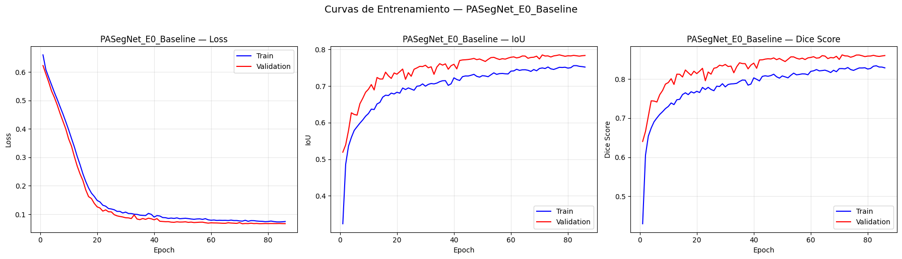
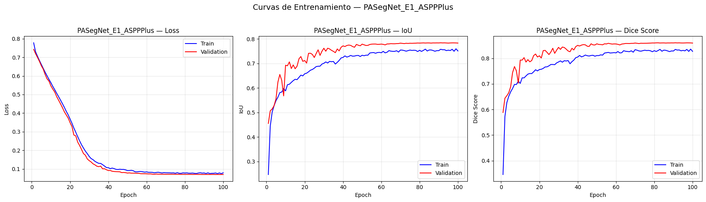
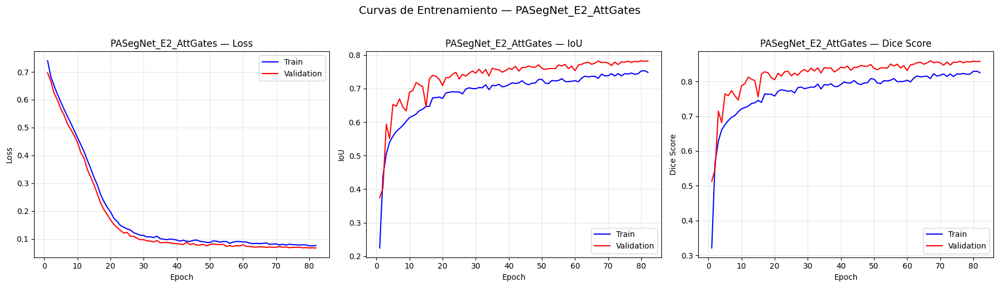
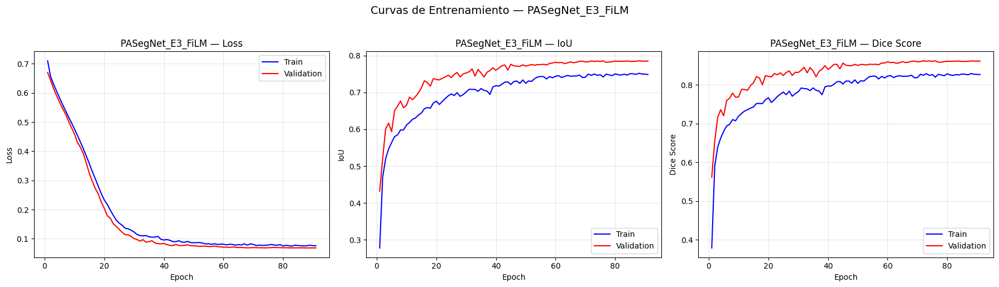
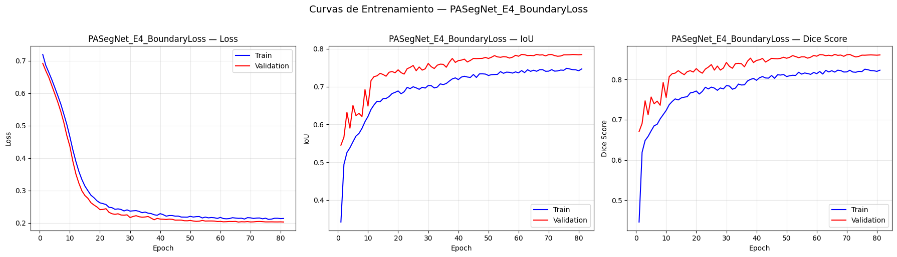

PASegNet — Plane-Aware Segmentation Network#
Descripción General#
Este notebook presenta la implementación, entrenamiento y evaluación de PASegNet (Plane-Aware Segmentation Network), la arquitectura de segmentación propuesta en este trabajo como contribución principal al estado del arte en segmentación de tumores cerebrales sobre el dataset BRISC 2025 (Fateh et al., Scientific Data, Nature Portfolio, 2026).
Contexto y Motivación#
Las fases previas del proyecto establecieron las bases para este trabajo:
Fase 3 — EDA: El análisis exploratorio documentó hallazgos estadísticos no reportados por los autores originales del dataset, entre ellos que el rendimiento de segmentación difiere significativamente entre planos anatómicos (Sagittal > Coronal > Axial, χ²=42.76, p<0.0001), y que el desbalance tumor/fondo es extremo (~1.7% vs. ~98.3%).
Fase 4 — Preprocesamiento: Se diseñó y verificó el pipeline de preprocesamiento, generando los splits estratificados de entrenamiento, validación y test.
Fase 5 — Benchmarks: Se entrenaron 5 arquitecturas de referencia bajo condiciones experimentales estandarizadas. El mejor resultado obtenido fue UNet++ con Weighted mIoU = 79.90% y Dice = 0.8674, superando en 2–8 puntos porcentuales los resultados reportados en el paper original de BRISC. El SOTA externo a superar es SaberNet con 80.6% mIoU (Fateh et al., 2026).
Contribución de este Notebook#
PASegNet integra tres innovaciones arquitecturales motivadas empíricamente por los hallazgos del EDA y los benchmarks:
ASPP+ — Módulo de contexto multi-escala en el bottleneck, que aborda la dificultad de segmentación de gliomas irregulares y difusos.
Attention Gates con FiLM — Skip connections atendidas que suprimen el ruido de fondo dominante antes de la concatenación en el decoder.
FiLM por plano anatómico — Adaptación de features al plano de adquisición, motivada por el hallazgo original de rendimiento diferencial entre planos anatómicos.
Meta Cuantitativa#
Métrica |
Score a superar |
Referencia |
|---|---|---|
Weighted mIoU |
> 80.6% |
SaberNet — Fateh et al., 2026 |
Global Dice |
> 0.8674 |
UNet++ — Este trabajo, Fase 5 |
mIoU Glioma |
> 75.2% |
DAD — Fateh et al., 2026 |
mIoU Meningioma |
> 82.4% |
SaberNet — Fateh et al., 2026 |
mIoU Pituitary |
> 84.7% |
ABANet — Fateh et al., 2026 |
Sección 1 — Configuración del Entorno#
Objetivo: Importar las librerías necesarias y establecer la configuración base del entorno de ejecución: semilla de reproducibilidad, dispositivo de cómputo y verificación de versiones.
La configuración es idéntica a la utilizada en benchmark2.ipynb para
garantizar comparabilidad total de resultados. La semilla fija (42) aplicada
a PyTorch, CUDA y NumPy asegura reproducibilidad completa del experimento.
# ============================================================
# 1. CONFIGURACIÓN DEL ENTORNO
# ============================================================
import os
import time
import copy
import json
import numpy as np
import pandas as pd
import matplotlib.pyplot as plt
import seaborn as sns
import warnings
# PyTorch
import torch
import torch.nn as nn
import torch.nn.functional as F
import torch.optim as optim
from torch.utils.data import Dataset, DataLoader
from torch.amp import GradScaler, autocast
# Procesamiento de imágenes
from PIL import Image
# Augmentación
import albumentations as A
from albumentations.pytorch import ToTensorV2
# Segmentation Models PyTorch
import segmentation_models_pytorch as smp
# Reproducibilidad
SEED = 42
torch.manual_seed(SEED)
torch.cuda.manual_seed(SEED)
np.random.seed(SEED)
torch.backends.cudnn.deterministic = True
torch.backends.cudnn.benchmark = False
warnings.filterwarnings('ignore')
device = torch.device('cuda' if torch.cuda.is_available() else 'cpu')
print("=" * 60)
print(" CONFIGURACIÓN DEL ENTORNO — PASegNet")
print("=" * 60)
print(f" PyTorch : {torch.__version__}")
print(f" Device : {device}")
if torch.cuda.is_available():
print(f" GPU : {torch.cuda.get_device_name(0)}")
print(f" VRAM : {torch.cuda.get_device_properties(0).total_memory / 1024**3:.1f} GB")
print(f" Seed : {SEED}")
print("=" * 60)
c:\Users\johan\miniconda3\envs\deep_learning\lib\site-packages\tqdm\auto.py:21: TqdmWarning: IProgress not found. Please update jupyter and ipywidgets. See https://ipywidgets.readthedocs.io/en/stable/user_install.html
from .autonotebook import tqdm as notebook_tqdm
============================================================
CONFIGURACIÓN DEL ENTORNO — PASegNet
============================================================
PyTorch : 2.5.1+cu121
Device : cuda
GPU : NVIDIA GeForce RTX 3050 Laptop GPU
VRAM : 4.0 GB
Seed : 42
============================================================
Sección 2 — Carga de Datos y DataLoaders#
Objetivo: Construir los DataLoaders de PyTorch que alimentarán el
entrenamiento de PASegNet, aplicando el pipeline de preprocesamiento
diseñado y verificado en la Fase 4 del proyecto (preprocesamiento2.ipynb).
Pipeline de preprocesamiento aplicado#
El pipeline transforma cada par imagen–máscara desde su formato original en disco (JPEG, 512×512, RGB) hasta tensores PyTorch listos para el modelo:
Paso |
Operación |
Justificación |
|---|---|---|
1 |
Conversión a escala de grises (1 canal) |
El dataset presenta modos de color mixtos (RGB y L); se unifica a 1 canal grayscale |
2 |
Normalización a [0, 1] |
La variabilidad de intensidad entre clases y planos justifica normalización por imagen individual |
3 |
Resize a 256×256 px |
Estandariza las 140 resoluciones distintas del dataset; compatible con la VRAM disponible |
4 |
Binarización de máscara (umbral > 0.5) |
Las máscaras contienen ~15 valores intermedios por antialiasing; se eliminan para obtener segmentación binaria estricta |
5 |
Re-binarización post-transforms |
Algunos transforms de Albumentations pueden reintroducir valores intermedios por interpolación; esta operación los elimina |
6 |
Conversión a tensor float32 |
Formato requerido por PyTorch para operaciones en GPU |
Augmentación (exclusivamente en entrenamiento)#
Las siguientes transformaciones se aplican de forma aleatoria y coherente sobre la imagen y su máscara correspondiente:
Augmentación |
Parámetros |
Justificación |
|---|---|---|
HorizontalFlip |
p=0.5 |
La anatomía cerebral es aproximadamente simétrica; los tumores no tienen lateralidad preferente |
VerticalFlip |
p=0.3 |
Incrementa variabilidad de orientación sin alterar la naturaleza de la imagen |
RandomRotate90 |
p=0.3 |
Simula variaciones menores en el posicionamiento del paciente durante la adquisición |
ShiftScaleRotate |
shift±5%, scale±10%, rot±15°, p=0.4 |
Combate el sesgo de localización espacial documentado en el EDA |
ElasticTransform |
alpha=50, sigma=10, p=0.2 |
Simula deformaciones tisulares leves propias de la variabilidad anatómica interindividual |
RandomBrightnessContrast |
±15%, p=0.4 |
Compensa la variabilidad de intensidad entre clases y planos anatómicos |
GaussNoise |
var=(5, 25), p=0.3 |
Simula el ruido inherente a las adquisiciones MRI |
GaussianBlur |
kernel (3,5), p=0.2 |
Simula variaciones en la resolución efectiva entre escáneres |
Los conjuntos de validación y test no reciben augmentación, garantizando una evaluación determinista y reproducible.
Particiones utilizadas#
Los splits fueron generados en preprocesamiento2.ipynb mediante
estratificación por la interacción tipo tumoral × plano anatómico:
Partición |
Imágenes |
Batches |
Augmentación |
|---|---|---|---|
Train |
3,146 |
196 |
Sí |
Validation |
787 |
50 |
No |
Test |
860 |
54 |
No |
Integración con el módulo FiLM#
El campo plane_label retornado por cada muestra ('Axial', 'Coronal',
'Sagittal') es convertido a índices enteros mediante
PLANE_TO_IDX = {'Axial':0, 'Coronal':1, 'Sagittal':2} y pasado
directamente al modelo en cada forward pass para condicionar el módulo
FiLM de adaptación por plano anatómico.
# ============================================================
# 2. CARGA DE DATOS — Consistente con preprocesamiento2.ipynb
# ============================================================
base_path = r"C:\Users\johan\Downloads\Proyectos academicos\imagenes_tumores_cerebrales\brisc2025"
IMG_SIZE = 256
BATCH_SIZE = 16
NUM_WORKERS = 0
PIN_MEMORY = True
TUMOR_MAP = {'gl': 'Glioma', 'me': 'Meningioma', 'pi': 'Pituitary'}
PLANE_MAP = {'ax': 'Axial', 'co': 'Coronal', 'sa': 'Sagittal'}
PLANE_TO_IDX = {'Axial': 0, 'Coronal': 1, 'Sagittal': 2}
# ─── Cargar splits generados en preprocesamiento2.ipynb ───
df_train = pd.read_csv(os.path.join(base_path, 'split_train.csv'))
df_val = pd.read_csv(os.path.join(base_path, 'split_val.csv'))
df_test = pd.read_csv(os.path.join(base_path, 'split_test.csv'))
print(f"Splits cargados:")
print(f" Train : {len(df_train)} | Val : {len(df_val)} | Test : {len(df_test)}")
# ─── Dataset class — idéntica a preprocesamiento2.ipynb ───
class BRISCSegDataset(Dataset):
"""
Dataset de segmentación para BRISC 2025.
Idéntico al definido en preprocesamiento2.ipynb para
garantizar comparabilidad total con los benchmarks.
Cada muestra retorna:
image : tensor float32 (1, H, W), normalizado [0, 1]
mask : tensor float32 (1, H, W), binario {0, 1}
meta : diccionario con metadatos de la muestra
"""
def __init__(self, dataframe, transforms=None):
self.df = dataframe.reset_index(drop=True)
self.transforms = transforms
def __len__(self):
return len(self.df)
def __getitem__(self, idx):
row = self.df.iloc[idx]
image = np.array(
Image.open(row['image_path']).convert('L'),
dtype=np.float32
) / 255.0
mask = np.array(
Image.open(row['mask_path']).convert('L'),
dtype=np.float32
) / 255.0
mask = (mask > 0.5).astype(np.float32)
if self.transforms:
transformed = self.transforms(image=image, mask=mask)
image = transformed['image']
mask = transformed['mask']
else:
image = torch.from_numpy(image)
mask = torch.from_numpy(mask)
# Re-binarización de seguridad post-transforms
mask = (mask > 0.5).float()
if image.ndim == 2:
image = image.unsqueeze(0)
if mask.ndim == 2:
mask = mask.unsqueeze(0)
meta = {
'filename': row['filename'],
'tumor_label': row['tumor_label'],
'plane_label': row['plane_label'],
'tumor_code': row['tumor_code'],
'plane_code': row['plane_code'],
}
return image, mask, meta
def get_labels_for_stratification(self):
return (self.df['tumor_label'] + '_' + self.df['plane_label']).values
# ─── Transforms — mismo estilo que preprocesamiento2.ipynb ───
def get_train_transforms(img_size=IMG_SIZE):
return A.Compose([
A.Resize(img_size, img_size, interpolation=1, mask_interpolation=0),
A.HorizontalFlip(p=0.5),
A.VerticalFlip(p=0.3),
A.RandomRotate90(p=0.3),
A.ShiftScaleRotate(shift_limit=0.05, scale_limit=0.1,
rotate_limit=15, border_mode=0, p=0.4),
A.ElasticTransform(alpha=50, sigma=10, border_mode=0, p=0.2),
A.RandomBrightnessContrast(brightness_limit=0.15,
contrast_limit=0.15, p=0.4),
A.GaussNoise(var_limit=(5.0, 25.0), p=0.3),
A.GaussianBlur(blur_limit=(3, 5), p=0.2),
ToTensorV2(),
])
def get_val_test_transforms(img_size=IMG_SIZE):
return A.Compose([
A.Resize(img_size, img_size, interpolation=1, mask_interpolation=0),
ToTensorV2(),
])
# ─── Datasets y DataLoaders ───
train_dataset = BRISCSegDataset(df_train, transforms=get_train_transforms())
val_dataset = BRISCSegDataset(df_val, transforms=get_val_test_transforms())
test_dataset = BRISCSegDataset(df_test, transforms=get_val_test_transforms())
train_loader = DataLoader(
train_dataset, batch_size=BATCH_SIZE, shuffle=True,
num_workers=NUM_WORKERS, pin_memory=PIN_MEMORY, drop_last=True
)
val_loader = DataLoader(
val_dataset, batch_size=BATCH_SIZE, shuffle=False,
num_workers=NUM_WORKERS, pin_memory=PIN_MEMORY, drop_last=False
)
test_loader = DataLoader(
test_dataset, batch_size=BATCH_SIZE, shuffle=False,
num_workers=NUM_WORKERS, pin_memory=PIN_MEMORY, drop_last=False
)
print(f"\nDataLoaders:")
print(f" Train : {len(train_loader)} batches ({len(train_dataset)} imágenes)")
print(f" Val : {len(val_loader)} batches ({len(val_dataset)} imágenes)")
print(f" Test : {len(test_loader)} batches ({len(test_dataset)} imágenes)")
Splits cargados:
Train : 3146 | Val : 787 | Test : 860
DataLoaders:
Train : 196 batches (3146 imágenes)
Val : 50 batches (787 imágenes)
Test : 54 batches (860 imágenes)
Sección 3 — Funciones de Pérdida y Métricas#
Objetivo: Definir la función de pérdida compuesta PASegNetLoss y las métricas de evaluación que se usarán durante el entrenamiento y la evaluación del modelo.
PASegNetLoss#
La función de pérdida combina tres términos:
con \(\lambda_1 = 0.5\), \(\lambda_2 = 0.3\), \(\lambda_3 = 0.2\).
Componente |
Motivación |
|---|---|
Dice Loss |
Maneja el desbalance extremo documentado en el EDA: 1.7% de píxeles corresponden a tumor frente a un 98.3% de fondo. La Cross-Entropy estándar es inadecuada bajo este desbalance — un modelo que predice fondo en todos los píxeles alcanzaría >98% de accuracy |
BCE Loss |
Estabiliza el gradiente en la región dominante de fondo, complementando el Dice Loss |
Boundary Loss |
Las máscaras de BRISC presentan ~15 valores únicos por antialiasing en los bordes (EDA, hallazgo #9). Este término penaliza específicamente los errores en la región de borde, extraída mediante morfología (dilatación − erosión). Referencia: Kervadec et al., MIDL 2019 |
Métricas de evaluación#
Las funciones compute_iou() y compute_dice() son idénticas a las
utilizadas en benchmark2.ipynb, garantizando comparabilidad directa
de resultados entre PASegNet y los modelos de referencia.
# ============================================================
# 3. FUNCIONES DE PÉRDIDA Y MÉTRICAS
# ============================================================
class DiceLoss(nn.Module):
def __init__(self, smooth=1.0):
super().__init__()
self.smooth = smooth
def forward(self, pred, target):
pred = torch.sigmoid(pred)
pred_flat = pred.view(-1)
target_flat = target.view(-1)
intersection = (pred_flat * target_flat).sum()
dice = (2. * intersection + self.smooth) / (
pred_flat.sum() + target_flat.sum() + self.smooth
)
return 1.0 - dice
class BoundaryLoss(nn.Module):
"""
Penaliza errores en la región de borde de la máscara ground truth.
La región de borde se extrae mediante morfología: dilatación − erosión.
Referencia: Kervadec et al., MIDL 2019.
Motivación: máscaras BRISC con ~15 valores únicos por antialiasing.
"""
def __init__(self, dilation_kernel_size=3):
super().__init__()
k = dilation_kernel_size
self.register_buffer('kernel', torch.ones(1, 1, k, k))
self.pad = k // 2
self.bce = nn.BCEWithLogitsLoss()
def _morphology(self, mask, op='dilate'):
kernel = self.kernel.to(mask)
x = F.conv2d(mask, kernel, padding=self.pad)
if op == 'dilate':
return (x > 0).float()
else:
return (x == kernel.sum()).float()
def forward(self, pred, target):
with torch.no_grad():
dilated = self._morphology(target, 'dilate')
eroded = self._morphology(target, 'erode')
border = (dilated - eroded).clamp(0, 1)
if border.sum() < 1:
return torch.tensor(0.0, device=pred.device, requires_grad=True)
return self.bce(pred * border, target * border)
class PASegNetLoss(nn.Module):
"""
Función de pérdida compuesta para PASegNet:
L = λ1·Dice + λ2·BCE + λ3·Boundary
"""
def __init__(self, lambda1=0.5, lambda2=0.3, lambda3=0.2, smooth=1.0):
super().__init__()
self.lambda1 = lambda1
self.lambda2 = lambda2
self.lambda3 = lambda3
self.dice_loss = DiceLoss(smooth=smooth)
self.bce_loss = nn.BCEWithLogitsLoss()
self.boundary_loss = BoundaryLoss(dilation_kernel_size=3)
def forward(self, pred, target):
return (self.lambda1 * self.dice_loss(pred, target) +
self.lambda2 * self.bce_loss(pred, target) +
self.lambda3 * self.boundary_loss(pred, target))
class ComboLoss(nn.Module):
"""
Función de pérdida estándar usada en los benchmarks.
Se reutiliza aquí para los experimentos de ablation
que no incluyen el término de borde (E0, E1, E2, E3).
"""
def __init__(self, alpha=0.5, smooth=1.0):
super().__init__()
self.alpha = alpha
self.dice_loss = DiceLoss(smooth=smooth)
self.bce_loss = nn.BCEWithLogitsLoss()
def forward(self, pred, target):
return (self.alpha * self.dice_loss(pred, target) +
(1 - self.alpha) * self.bce_loss(pred, target))
def compute_iou(pred, target, threshold=0.5, smooth=1e-6):
pred_bin = (torch.sigmoid(pred) > threshold).float()
intersection = (pred_bin * target).sum(dim=(1, 2, 3))
union = (pred_bin.sum(dim=(1, 2, 3)) +
target.sum(dim=(1, 2, 3)) - intersection)
return (intersection + smooth) / (union + smooth)
def compute_dice(pred, target, threshold=0.5, smooth=1e-6):
pred_bin = (torch.sigmoid(pred) > threshold).float()
intersection = (pred_bin * target).sum(dim=(1, 2, 3))
return (2. * intersection + smooth) / (
pred_bin.sum(dim=(1, 2, 3)) + target.sum(dim=(1, 2, 3)) + smooth
)
print("Funciones de pérdida definidas:")
print(" PASegNetLoss : λ1=0.5·Dice + λ2=0.3·BCE + λ3=0.2·Boundary")
print(" ComboLoss : 0.5·Dice + 0.5·BCE (ablation E0–E3)")
print(" Métricas : IoU, Dice Score")
Funciones de pérdida definidas:
PASegNetLoss : λ1=0.5·Dice + λ2=0.3·BCE + λ3=0.2·Boundary
ComboLoss : 0.5·Dice + 0.5·BCE (ablation E0–E3)
Métricas : IoU, Dice Score
Sección 4 — Arquitectura PASegNet#
Objetivo: Implementar la arquitectura completa de PASegNet y sus variantes para el ablation study. Cada módulo está motivado por un hallazgo empírico concreto del análisis del dataset BRISC 2025.
Principio de diseño — Data-Driven Architecture#
Cada componente de PASegNet responde a una limitación identificada empíricamente durante el EDA y los benchmarks:
Módulo |
Hallazgo que lo motiva |
Referencia |
|---|---|---|
Encoder ResNet34 |
Domina el rendimiento en los 5 benchmarks — el cuello de botella está en el decoder |
Fase 5, este trabajo |
ASPP+ |
DeepLabV3+ fue el modelo más débil (78.31% mIoU); Glioma tiene el Dice más bajo (~76%) por morfología difusa |
Chen et al., 2018 + EDA |
Channel Attention |
Mejora la selección de escalas relevantes en la fusión multi-escala |
Hu et al. (SE-Net), 2018 |
Attention Gates |
Sparsity del 1.7% — el 98.3% de fondo genera ruido masivo en las skip connections clásicas |
Oktay et al., 2018 + EDA |
FiLM por plano |
Patrón Sagittal > Coronal > Axial consistente en los 5 modelos (p<0.0001) — hallazgo original de este trabajo |
Perez et al., NeurIPS 2018 |
Boundary Loss |
Máscaras con ~15 valores únicos por antialiasing — errores sistemáticos en bordes |
Kervadec et al., MIDL 2019 + EDA |
Diagrama de la arquitectura completa#
graph TD
%% Estilos de color
classDef input fill:#f5f5f5,stroke:#333,stroke-width:2px;
classDef encoder fill:#e1f5fe,stroke:#01579b;
classDef bottleneck fill:#fff9c4,stroke:#fbc02d;
classDef film fill:#fce4ec,stroke:#c2185b,stroke-width:2px;
classDef decoder fill:#e8f5e9,stroke:#2e7d32;
%% Nodos principales
IN([INPUT: 256×256×1]):::input
subgraph Encoder [ENCODER: ResNet34 ImageNet]
s1[s1: B, 64, 128, 128]
s2[s2: B, 64, 64, 64]
s3[s3: B, 128, 32, 32]
s4[s4: B, 256, 16, 16]
base[b: B, 512, 8, 8]
end
subgraph ASPP_Block [ASPP+ Multi-Scale Bottleneck]
ASPP[r = {1, 6, 12, 18} + GAP<br/>+ Channel Attention Fusion]
dim_aspp[→ B, 256, 8, 8]
end
FiLM{FiLM Layer: γ_p ⊙ F + β_p}:::film
subgraph Decoder_Block [DECODER: 4 etapas]
D4[D4: Upsample + AttGate s4 + Conv]
D3[D3: Upsample + AttGate s3 + Conv]
D2[D2: Upsample + AttGate s2 + Conv]
D1[D1: Upsample + AttGate s1 + Conv]
end
OUT([OUTPUT: 256×256×1]):::input
%% Conexiones de flujo
IN --> s1 --> s2 --> s3 --> s4 --> base
base --> ASPP
ASPP --> dim_aspp
dim_aspp --> FiLM
FiLM --> D4 --> D3 --> D2 --> D1
D1 --> OUT
%% Conexiones Skip con Attention Gates (Punteadas)
s4 -.-> D4
s3 -.-> D3
s2 -.-> D2
s1 -.-> D1
# ============================================================
# 4. ARQUITECTURA PASegNet
# ============================================================
# ── Channel Attention (Squeeze-and-Excitation) ────────────
class ChannelAttention(nn.Module):
def __init__(self, in_channels, reduction=16):
super().__init__()
mid = max(in_channels // reduction, 4)
self.avg_pool = nn.AdaptiveAvgPool2d(1)
self.fc = nn.Sequential(
nn.Linear(in_channels, mid, bias=False),
nn.ReLU(inplace=True),
nn.Linear(mid, in_channels, bias=False),
nn.Sigmoid(),
)
def forward(self, x):
b, c, _, _ = x.shape
y = self.avg_pool(x).view(b, c)
y = self.fc(y).view(b, c, 1, 1)
return x * y
# ── ASPP+ ─────────────────────────────────────────────────
class ASPPPlus(nn.Module):
"""
Atrous Spatial Pyramid Pooling mejorado con Channel Attention.
Tasas de dilatación r={1,6,12,18} + Global Average Pooling.
"""
def __init__(self, in_channels=512, out_channels=256):
super().__init__()
self.branch1 = nn.Sequential(
nn.Conv2d(in_channels, out_channels, 1, bias=False),
nn.BatchNorm2d(out_channels), nn.ReLU(inplace=True))
self.branch2 = nn.Sequential(
nn.Conv2d(in_channels, out_channels, 3,
padding=6, dilation=6, bias=False),
nn.BatchNorm2d(out_channels), nn.ReLU(inplace=True))
self.branch3 = nn.Sequential(
nn.Conv2d(in_channels, out_channels, 3,
padding=12, dilation=12, bias=False),
nn.BatchNorm2d(out_channels), nn.ReLU(inplace=True))
self.branch4 = nn.Sequential(
nn.Conv2d(in_channels, out_channels, 3,
padding=18, dilation=18, bias=False),
nn.BatchNorm2d(out_channels), nn.ReLU(inplace=True))
self.branch5 = nn.Sequential(
nn.AdaptiveAvgPool2d(1),
nn.Conv2d(in_channels, out_channels, 1, bias=False),
nn.BatchNorm2d(out_channels), nn.ReLU(inplace=True))
self.project = nn.Sequential(
nn.Conv2d(out_channels * 5, out_channels, 1, bias=False),
nn.BatchNorm2d(out_channels), nn.ReLU(inplace=True))
self.channel_attn = ChannelAttention(out_channels, reduction=16)
self.dropout = nn.Dropout2d(0.1)
def forward(self, x):
h, w = x.shape[2], x.shape[3]
b5 = F.interpolate(self.branch5(x), size=(h, w),
mode='bilinear', align_corners=False)
out = torch.cat([self.branch1(x), self.branch2(x),
self.branch3(x), self.branch4(x), b5], dim=1)
out = self.project(out)
out = self.channel_attn(out)
return self.dropout(out)
# ── FiLM Module ───────────────────────────────────────────
class FiLMModule(nn.Module):
"""
Feature-wise Linear Modulation por plano anatómico.
FiLM(F, p) = γ_p ⊙ F + β_p
Planos: Axial=0, Coronal=1, Sagittal=2.
"""
def __init__(self, num_features, num_planes=3):
super().__init__()
self.gamma = nn.Embedding(num_planes, num_features)
self.beta = nn.Embedding(num_planes, num_features)
nn.init.ones_(self.gamma.weight)
nn.init.zeros_(self.beta.weight)
def forward(self, x, plane_idx):
gamma = self.gamma(plane_idx).unsqueeze(-1).unsqueeze(-1)
beta = self.beta(plane_idx).unsqueeze(-1).unsqueeze(-1)
return gamma * x + beta
# ── Plane-Aware Attention Gate ────────────────────────────
class PlaneAwareAttentionGate(nn.Module):
"""
Attention Gate con señal de gating modulada por FiLM.
α = σ(W_α · ReLU(W_g·FiLM(g,p) + W_x·x + b))
x̂ = α ⊙ x
"""
def __init__(self, F_g, F_x, F_int, num_planes=3):
super().__init__()
self.film = FiLMModule(F_g, num_planes)
self.W_g = nn.Sequential(
nn.Conv2d(F_g, F_int, 1, bias=False),
nn.BatchNorm2d(F_int))
self.W_x = nn.Sequential(
nn.Conv2d(F_x, F_int, 1, bias=False),
nn.BatchNorm2d(F_int))
self.psi = nn.Sequential(
nn.Conv2d(F_int, 1, 1, bias=True),
nn.BatchNorm2d(1),
nn.Sigmoid())
self.relu = nn.ReLU(inplace=True)
def forward(self, g, x, plane_idx):
g_film = self.film(g, plane_idx)
g_up = F.interpolate(g_film, size=x.shape[2:],
mode='bilinear', align_corners=False)
alpha = self.psi(self.relu(self.W_g(g_up) + self.W_x(x)))
return x * alpha, alpha
# ── Decoder Block ─────────────────────────────────────────
class DecoderBlock(nn.Module):
def __init__(self, in_channels, skip_channels, out_channels):
super().__init__()
self.conv = nn.Sequential(
nn.Conv2d(in_channels + skip_channels, out_channels,
3, padding=1, bias=False),
nn.BatchNorm2d(out_channels), nn.ReLU(inplace=True),
nn.Conv2d(out_channels, out_channels,
3, padding=1, bias=False),
nn.BatchNorm2d(out_channels), nn.ReLU(inplace=True))
def forward(self, x, skip):
x = F.interpolate(x, size=skip.shape[2:],
mode='bilinear', align_corners=False)
return self.conv(torch.cat([x, skip], dim=1))
# ── PASegNet — Modelo Completo ────────────────────────────
class PASegNet(nn.Module):
"""
Plane-Aware Segmentation Network.
Args:
use_aspp : activa ASPP+ en el bottleneck
use_attgates: activa Attention Gates en skip connections
use_film : activa FiLM de adaptación por plano
"""
def __init__(self, encoder_name='resnet34', encoder_weights='imagenet',
in_channels=1, num_planes=3,
use_aspp=True, use_attgates=True, use_film=True):
super().__init__()
self.use_aspp = use_aspp
self.use_attgates = use_attgates
self.use_film = use_film
# Encoder vía SMP
_base = smp.Unet(encoder_name=encoder_name,
encoder_weights=encoder_weights,
in_channels=in_channels,
classes=1, activation=None)
self.encoder = _base.encoder
enc_ch = self.encoder.out_channels
e1, e2, e3, e4, e5 = enc_ch[1], enc_ch[2], enc_ch[3], enc_ch[4], enc_ch[5]
btn_ch = 256 if use_aspp else e5
# Bottleneck
if use_aspp:
self.bottleneck = ASPPPlus(in_channels=e5, out_channels=256)
# FiLM
if use_film:
self.film_bottleneck = FiLMModule(btn_ch, num_planes)
# Attention Gates
if use_attgates:
self.ag4 = PlaneAwareAttentionGate(btn_ch, e4, btn_ch // 2)
self.ag3 = PlaneAwareAttentionGate(128, e3, 64)
self.ag2 = PlaneAwareAttentionGate(64, e2, 32)
self.ag1 = PlaneAwareAttentionGate(32, e1, 16)
# Decoder
self.dec4 = DecoderBlock(btn_ch, e4, 128)
self.dec3 = DecoderBlock(128, e3, 64)
self.dec2 = DecoderBlock(64, e2, 32)
self.dec1 = DecoderBlock(32, e1, 16)
self.head = nn.Conv2d(16, 1, kernel_size=1)
self.attention_maps = {}
def forward(self, x, plane_idx=None):
features = self.encoder(x)
s1, s2, s3, s4 = features[1], features[2], features[3], features[4]
b = features[5]
if self.use_aspp:
b = self.bottleneck(b)
if self.use_film and plane_idx is not None:
b = self.film_bottleneck(b, plane_idx)
if self.use_attgates and plane_idx is not None:
s4, a4 = self.ag4(b, s4, plane_idx)
d4 = self.dec4(b, s4)
s3, a3 = self.ag3(d4, s3, plane_idx)
d3 = self.dec3(d4, s3)
s2, a2 = self.ag2(d3, s2, plane_idx)
d2 = self.dec2(d3, s2)
s1, a1 = self.ag1(d2, s1, plane_idx)
d1 = self.dec1(d2, s1)
self.attention_maps = {'a1': a1, 'a2': a2, 'a3': a3, 'a4': a4}
else:
d4 = self.dec4(b, s4)
d3 = self.dec3(d4, s3)
d2 = self.dec2(d3, s2)
d1 = self.dec1(d2, s1)
out = F.interpolate(d1, size=x.shape[2:],
mode='bilinear', align_corners=False)
return self.head(out)
# ── Funciones constructoras por experimento ───────────────
def build_pasegnet_e0():
"""E0 — Baseline: solo encoder + decoder, sin módulos innovadores."""
return PASegNet(use_aspp=False, use_attgates=False, use_film=False)
def build_pasegnet_e1():
"""E1 — Baseline + ASPP+."""
return PASegNet(use_aspp=True, use_attgates=False, use_film=False)
def build_pasegnet_e2():
"""E2 — Baseline + Attention Gates."""
return PASegNet(use_aspp=False, use_attgates=True, use_film=True)
def build_pasegnet_e3():
"""E3 — Baseline + FiLM."""
return PASegNet(use_aspp=False, use_attgates=False, use_film=True)
def build_pasegnet_e4():
"""E4 — Baseline + BoundaryLoss (misma arquitectura que E0)."""
return PASegNet(use_aspp=False, use_attgates=False, use_film=False)
def build_pasegnet():
"""E5 — PASegNet completo: ASPP+ + AttGates + FiLM."""
return PASegNet(use_aspp=True, use_attgates=True, use_film=True)
# ── Verificación de forward pass ──────────────────────────
print("Verificando PASegNet completo...")
_m = build_pasegnet().to(device)
_x = torch.randn(2, 1, 256, 256).to(device)
_pidx = torch.tensor([0, 2]).to(device)
total_p = sum(p.numel() for p in _m.parameters())
trainable_p = sum(p.numel() for p in _m.parameters() if p.requires_grad)
print(f" Parámetros totales : {total_p:>12,}")
print(f" Parámetros entrenables : {trainable_p:>12,}")
print(f" Tamaño aprox. : {total_p*4/1024**2:>8.1f} MB")
with torch.no_grad():
_out = _m(_x, _pidx)
assert _out.shape == (2, 1, 256, 256), "ERROR: forma incorrecta"
print(f" Input : {list(_x.shape)}")
print(f" Output : {list(_out.shape)}")
print(" Forward pass correcto")
del _m, _x, _pidx, _out
torch.cuda.empty_cache()
Verificando PASegNet completo...
Parámetros totales : 26,496,397
Parámetros entrenables : 26,496,397
Tamaño aprox. : 101.1 MB
Input : [2, 1, 256, 256]
Output : [2, 1, 256, 256]
Forward pass correcto
Sección 5 — Motor de Entrenamiento#
Objetivo: Definir las funciones de entrenamiento y evaluación
adaptadas para PASegNet. Respecto al motor utilizado en
benchmark2.ipynb, los cambios son mínimos y específicos:
Elemento |
benchmark2.ipynb |
modelo_propuesto.ipynb |
|---|---|---|
Forward pass |
|
|
Meta en el loop |
Descartado ( |
Usado para extraer |
Función de pérdida |
|
|
El sistema de guardado es idéntico al del benchmark: checkpoint .pth,
historial .json y resultados de test .csv se persisten a disco
inmediatamente al finalizar cada experimento.
# ============================================================
# 5. MOTOR DE ENTRENAMIENTO — Adaptado para PASegNet
# ============================================================
HPARAMS = {
'max_epochs': 100,
'patience': 15,
'learning_rate': 1e-4,
'weight_decay': 1e-4,
'scheduler_patience': 5,
'scheduler_factor': 0.5,
'min_lr': 1e-7,
}
def get_plane_idx(meta, device):
"""Convierte strings de plano a tensor de índices enteros."""
return torch.tensor(
[PLANE_TO_IDX[p] for p in meta['plane_label']],
dtype=torch.long, device=device
)
def train_one_epoch_pasegnet(model, loader, criterion, optimizer, scaler, device):
model.train()
running_loss = running_iou = running_dice = 0.0
n_batches = 0
for images, masks, meta in loader:
images = images.to(device)
masks = masks.to(device)
plane_idx = get_plane_idx(meta, device)
optimizer.zero_grad()
with autocast(device_type='cuda'):
outputs = model(images, plane_idx)
loss = criterion(outputs, masks)
scaler.scale(loss).backward()
scaler.step(optimizer)
scaler.update()
with torch.no_grad():
running_loss += loss.item()
running_iou += compute_iou(outputs, masks).mean().item()
running_dice += compute_dice(outputs, masks).mean().item()
n_batches += 1
return {'loss': running_loss/n_batches,
'iou': running_iou/n_batches,
'dice': running_dice/n_batches}
@torch.no_grad()
def evaluate_pasegnet(model, loader, criterion, device):
model.eval()
running_loss = running_iou = running_dice = 0.0
n_batches = 0
for images, masks, meta in loader:
images = images.to(device)
masks = masks.to(device)
plane_idx = get_plane_idx(meta, device)
with autocast(device_type='cuda'):
outputs = model(images, plane_idx)
loss = criterion(outputs, masks)
running_loss += loss.item()
running_iou += compute_iou(outputs, masks).mean().item()
running_dice += compute_dice(outputs, masks).mean().item()
n_batches += 1
return {'loss': running_loss/n_batches,
'iou': running_iou/n_batches,
'dice': running_dice/n_batches}
def train_pasegnet(model, model_name, train_loader, val_loader,
device, hparams=HPARAMS, use_boundary_loss=False):
print(f"\n{'='*65}")
print(f" ENTRENAMIENTO: {model_name}")
print(f"{'='*65}")
total_p = sum(p.numel() for p in model.parameters())
trainable_p = sum(p.numel() for p in model.parameters() if p.requires_grad)
print(f" Parámetros totales : {total_p:>12,}")
print(f" Parámetros entrenables : {trainable_p:>12,}")
print(f" Tamaño del modelo : {total_p*4/1024**2:>10.1f} MB")
model = model.to(device)
criterion = (PASegNetLoss(lambda1=0.5, lambda2=0.3, lambda3=0.2)
if use_boundary_loss else ComboLoss(alpha=0.5))
optimizer = optim.AdamW(model.parameters(),
lr=hparams['learning_rate'],
weight_decay=hparams['weight_decay'])
scheduler = optim.lr_scheduler.ReduceLROnPlateau(
optimizer, mode='max',
factor=hparams['scheduler_factor'],
patience=hparams['scheduler_patience'],
min_lr=hparams['min_lr'], verbose=False)
scaler = GradScaler('cuda')
history = {'train_loss':[], 'train_iou':[], 'train_dice':[],
'val_loss':[], 'val_iou':[], 'val_dice':[], 'lr':[]}
best_val_dice = 0.0
best_model_state = None
patience_counter = 0
best_epoch = 0
ckpt_dir = os.path.join(base_path, 'checkpoints')
results_dir = os.path.join(base_path, 'results')
os.makedirs(ckpt_dir, exist_ok=True)
os.makedirs(results_dir, exist_ok=True)
start_time = time.time()
for epoch in range(1, hparams['max_epochs'] + 1):
epoch_start = time.time()
train_m = train_one_epoch_pasegnet(
model, train_loader, criterion, optimizer, scaler, device)
val_m = evaluate_pasegnet(model, val_loader, criterion, device)
current_lr = optimizer.param_groups[0]['lr']
scheduler.step(val_m['dice'])
for k in ['loss','iou','dice']:
history[f'train_{k}'].append(train_m[k])
history[f'val_{k}'].append(val_m[k])
history['lr'].append(current_lr)
improved = val_m['dice'] > best_val_dice
if improved:
best_val_dice = val_m['dice']
best_model_state = copy.deepcopy(model.state_dict())
best_epoch = epoch
patience_counter = 0
marker = ' ★ BEST'
torch.save({'epoch': epoch,
'model_state_dict': best_model_state,
'val_dice': best_val_dice,
'val_iou': val_m['iou']},
os.path.join(ckpt_dir, f'{model_name}_best.pth'))
else:
patience_counter += 1
marker = f' (patience: {patience_counter}/{hparams["patience"]})'
print(f" Epoch {epoch:3d}/{hparams['max_epochs']} │ "
f"Train Loss:{train_m['loss']:.4f} "
f"IoU:{train_m['iou']:.4f} "
f"Dice:{train_m['dice']:.4f} │ "
f"Val Loss:{val_m['loss']:.4f} "
f"IoU:{val_m['iou']:.4f} "
f"Dice:{val_m['dice']:.4f} │ "
f"LR:{current_lr:.1e} │ "
f"{time.time()-epoch_start:.1f}s{marker}")
if patience_counter >= hparams['patience']:
print(f"\n Early Stopping epoch {epoch}. "
f"Mejor epoch: {best_epoch} (Val Dice: {best_val_dice:.4f})")
break
model.load_state_dict(best_model_state)
safe_name = model_name.lower().replace(' ','_').replace('-','')
with open(os.path.join(results_dir, f'{safe_name}_history.json'), 'w') as f:
json.dump(history, f, indent=2)
print(f"\n Resumen — {model_name}")
print(f" Mejor epoch : {best_epoch}")
print(f" Mejor Val Dice : {best_val_dice:.4f}")
print(f" Tiempo total : {(time.time()-start_time)/60:.1f} min")
return model, history
print("Motor de entrenamiento PASegNet definido.")
Motor de entrenamiento PASegNet definido.
Sección 6 — Evaluación Detallada#
Objetivo: Calcular métricas desagregadas por tipo tumoral y plano anatómico sobre el conjunto de test. Este nivel de análisis constituye una de las contribuciones originales del trabajo — ninguno de los trabajos citantes de BRISC 2025 reporta métricas estratificadas por plano anatómico.
Métricas calculadas#
Métrica |
Descripción |
|---|---|
Weighted mIoU |
mIoU ponderado por número de muestras por clase — métrica principal de comparación con el SOTA |
Global Dice |
Dice promedio sobre el test set completo |
mIoU por tumor |
Glioma / Meningioma / Pituitary |
mIoU por plano |
Axial / Coronal / Sagittal — evalúa el impacto del módulo FiLM |
Tabla Tumor × Plano |
Matriz 3×3 de mIoU cruzados |
# ============================================================
# 6. EVALUACIÓN DETALLADA Y GUARDADO DE RESULTADOS
# ============================================================
@torch.no_grad()
def evaluate_detailed_pasegnet(model, loader, device, model_name="PASegNet"):
model.eval()
all_results = []
for images, masks, meta in loader:
images = images.to(device)
masks = masks.to(device)
plane_idx = get_plane_idx(meta, device)
with autocast(device_type='cuda'):
outputs = model(images, plane_idx)
ious = compute_iou(outputs, masks)
dices = compute_dice(outputs, masks)
for i in range(len(images)):
all_results.append({
'filename': meta['filename'][i],
'tumor_label': meta['tumor_label'][i],
'plane_label': meta['plane_label'][i],
'iou': ious[i].item(),
'dice': dices[i].item(),
})
results_df = pd.DataFrame(all_results)
tumor_iou = results_df.groupby('tumor_label')['iou'].mean()
tumor_counts = results_df.groupby('tumor_label')['iou'].count()
weighted_miou = (tumor_iou * tumor_counts / tumor_counts.sum()).sum()
plane_iou = results_df.groupby('plane_label')['iou'].mean()
global_dice = results_df['dice'].mean()
global_iou = results_df['iou'].mean()
summary = {
'model_name': model_name,
'global_iou': global_iou,
'global_dice': global_dice,
'weighted_miou': weighted_miou,
'tumor_iou': tumor_iou.to_dict(),
'plane_iou': plane_iou.to_dict(),
'tumor_dice': results_df.groupby('tumor_label')['dice'].mean().to_dict(),
'plane_dice': results_df.groupby('plane_label')['dice'].mean().to_dict(),
'cross_iou': results_df.groupby(
['tumor_label','plane_label'])['iou'].mean().to_dict(),
}
print(f"\n{'='*65}")
print(f" RESULTADOS EN TEST — {model_name}")
print(f"{'='*65}")
print(f" Weighted mIoU : {weighted_miou*100:.2f}%")
print(f" Global mIoU : {global_iou*100:.2f}%")
print(f" Global Dice : {global_dice*100:.2f}%")
print(f"\n mIoU por Tipo Tumoral:")
for t in ['Glioma','Meningioma','Pituitary']:
print(f" {t:<15} {tumor_iou.get(t,0)*100:.2f}%")
print(f"\n mIoU por Plano Anatómico:")
for p in ['Axial','Coronal','Sagittal']:
print(f" {p:<15} {plane_iou.get(p,0)*100:.2f}%")
print(f"\n Tabla Tumor × Plano:")
cross = results_df.pivot_table(
values='iou', index='tumor_label',
columns='plane_label', aggfunc='mean'
).reindex(index=['Glioma','Meningioma','Pituitary'],
columns=['Axial','Coronal','Sagittal']) * 100
print(cross.round(2).to_string())
return results_df, summary
def save_pasegnet_results(model_name, model, history,
test_loader, device, base_path):
results_dir = os.path.join(base_path, 'results')
os.makedirs(results_dir, exist_ok=True)
safe_name = model_name.lower().replace(' ','_').replace('-','')
results_df, summary = evaluate_detailed_pasegnet(
model, test_loader, device, model_name)
results_df.to_csv(
os.path.join(results_dir, f'{safe_name}_test_results.csv'), index=False)
summary_s = {k: ({str(kk): vv for kk,vv in v.items()}
if isinstance(v, dict) else v)
for k, v in summary.items()}
with open(os.path.join(results_dir, f'{safe_name}_summary.json'), 'w') as f:
json.dump(summary_s, f, indent=2)
print(f"\n Resultados guardados en {results_dir}/")
return results_df, summary
def plot_training_curves_pasegnet(history, model_name):
fig, axes = plt.subplots(1, 3, figsize=(18, 5))
epochs = range(1, len(history['train_loss']) + 1)
for ax, (tr, vl), title in zip(
axes,
[('train_loss','val_loss'),
('train_iou', 'val_iou'),
('train_dice','val_dice')],
['Loss', 'IoU', 'Dice Score']
):
ax.plot(epochs, history[tr], 'b-', label='Train', lw=1.5)
ax.plot(epochs, history[vl], 'r-', label='Validation', lw=1.5)
ax.set_title(f'{model_name} — {title}')
ax.set_xlabel('Epoch')
ax.set_ylabel(title)
ax.legend()
ax.grid(True, alpha=0.3)
plt.suptitle(f'Curvas de Entrenamiento — {model_name}',
fontsize=14, y=1.02)
plt.tight_layout()
plt.savefig(f'{model_name.lower()}_curves.png',
dpi=150, bbox_inches='tight')
plt.show()
print("Funciones de evaluación y visualización definidas.")
Funciones de evaluación y visualización definidas.
Sección 7 — Ablation Study y Entrenamiento del Modelo Completo#
Objetivo: Entrenar y evaluar cada variante de PASegNet de forma independiente para cuantificar la contribución individual de cada módulo innovador. Este ablation study es un requisito metodológico estándar en publicaciones de segmentación médica — permite demostrar que cada componente añade valor real y que la mejora no se debe únicamente a la combinación en bloque.
Diseño del ablation study#
Cada experimento activa un único módulo nuevo sobre la misma arquitectura base (Encoder ResNet34 + Decoder U-Net estándar), manteniendo todos los demás hiperparámetros constantes:
Experimento |
Módulos activos |
Loss |
Propósito |
|---|---|---|---|
E0 — Baseline |
Ninguno |
ComboLoss |
Punto de partida controlado |
E1 — +ASPP+ |
ASPP+ |
ComboLoss |
Aislar contribución del contexto multi-escala |
E2 — +AttGates |
Attention Gates + FiLM* |
ComboLoss |
Aislar contribución de la supresión de ruido |
E3 — +FiLM |
FiLM |
ComboLoss |
Aislar contribución de la adaptación por plano |
E4 — +BoundaryLoss |
Ninguno |
PASegNetLoss |
Aislar contribución del término de borde |
E5 — Full PASegNet |
ASPP+ + AttGates + FiLM |
PASegNetLoss |
Modelo propuesto completo |
*Los Attention Gates requieren FiLM para recibir la señal de plano.
Sistema de reanudación automática#
Cada celda verifica si el experimento ya fue completado consultando la
existencia del checkpoint .pth, el historial .json y el summary .json.
Si todos existen, carga los resultados desde disco sin reentrenar,
permitiendo reiniciar el notebook sin perder progreso.
Experimento E0 — Baseline#
Arquitectura de referencia interna: encoder ResNet34 preentrenado en ImageNet conectado directamente a un decoder U-Net estándar, sin ninguno de los módulos innovadores de PASegNet. Este experimento establece el punto de partida para cuantificar el aporte incremental de cada módulo. La función de pérdida es ComboLoss (0.5·Dice + 0.5·BCE), idéntica a la utilizada en los benchmarks de la Fase 5.
# ============================================================
# 7.0 EXPERIMENTO E0 — BASELINE
# ============================================================
E0_NAME = 'PASegNet_E0_Baseline'
e0_ckpt = os.path.join(base_path, 'checkpoints', f'{E0_NAME}_best.pth')
e0_summ = os.path.join(base_path, 'results', f'{E0_NAME.lower()}_summary.json')
e0_hist = os.path.join(base_path, 'results', f'{E0_NAME.lower()}_history.json')
e0_done = all(os.path.exists(p) for p in [e0_ckpt, e0_summ, e0_hist])
if e0_done:
print(f" {E0_NAME} ya entrenado. Cargando desde disco...")
with open(e0_hist) as f: e0_history = json.load(f)
with open(e0_summ) as f: e0_summary = json.load(f)
e0_results = pd.read_csv(os.path.join(
base_path, 'results', f'{E0_NAME.lower()}_test_results.csv'))
ckpt = torch.load(e0_ckpt, map_location='cpu', weights_only=True)
print(f" Val Dice: {ckpt['val_dice']:.4f} (epoch {ckpt['epoch']})")
else:
print(f" Iniciando entrenamiento: {E0_NAME}...")
e0_model = build_pasegnet_e0()
e0_model, e0_history = train_pasegnet(
e0_model, E0_NAME, train_loader, val_loader, device,
use_boundary_loss=False)
e0_results, e0_summary = save_pasegnet_results(
E0_NAME, e0_model, e0_history, test_loader, device, base_path)
del e0_model
torch.cuda.empty_cache()
print(f" VRAM liberada.")
plot_training_curves_pasegnet(e0_history, E0_NAME)
print(f"\n E0 — Weighted mIoU: {float(e0_summary['weighted_miou'])*100:.2f}%")
Iniciando entrenamiento: PASegNet_E0_Baseline...
=================================================================
ENTRENAMIENTO: PASegNet_E0_Baseline
=================================================================
Parámetros totales : 22,558,097
Parámetros entrenables : 22,558,097
Tamaño del modelo : 86.1 MB
Epoch 1/100 │ Train Loss:0.6603 IoU:0.3237 Dice:0.4299 │ Val Loss:0.6227 IoU:0.5193 Dice:0.6402 │ LR:1.0e-04 │ 73.5s ★ BEST
Epoch 2/100 │ Train Loss:0.6086 IoU:0.4861 Dice:0.6053 │ Val Loss:0.5936 IoU:0.5393 Dice:0.6658 │ LR:1.0e-04 │ 65.6s ★ BEST
Epoch 3/100 │ Train Loss:0.5813 IoU:0.5361 Dice:0.6541 │ Val Loss:0.5650 IoU:0.5786 Dice:0.7049 │ LR:1.0e-04 │ 64.8s ★ BEST
Epoch 4/100 │ Train Loss:0.5550 IoU:0.5597 Dice:0.6746 │ Val Loss:0.5333 IoU:0.6270 Dice:0.7442 │ LR:1.0e-04 │ 62.9s ★ BEST
Epoch 5/100 │ Train Loss:0.5284 IoU:0.5788 Dice:0.6905 │ Val Loss:0.5107 IoU:0.6225 Dice:0.7435 │ LR:1.0e-04 │ 63.5s (patience: 1/15)
Epoch 6/100 │ Train Loss:0.5040 IoU:0.5890 Dice:0.7004 │ Val Loss:0.4842 IoU:0.6207 Dice:0.7411 │ LR:1.0e-04 │ 60.6s (patience: 2/15)
Epoch 7/100 │ Train Loss:0.4781 IoU:0.5987 Dice:0.7094 │ Val Loss:0.4543 IoU:0.6518 Dice:0.7598 │ LR:1.0e-04 │ 49.6s ★ BEST
Epoch 8/100 │ Train Loss:0.4526 IoU:0.6076 Dice:0.7164 │ Val Loss:0.4271 IoU:0.6666 Dice:0.7706 │ LR:1.0e-04 │ 50.1s ★ BEST
Epoch 9/100 │ Train Loss:0.4252 IoU:0.6177 Dice:0.7243 │ Val Loss:0.3999 IoU:0.6832 Dice:0.7868 │ LR:1.0e-04 │ 48.9s ★ BEST
Epoch 10/100 │ Train Loss:0.3969 IoU:0.6251 Dice:0.7297 │ Val Loss:0.3650 IoU:0.6915 Dice:0.7908 │ LR:1.0e-04 │ 48.6s ★ BEST
Epoch 11/100 │ Train Loss:0.3666 IoU:0.6370 Dice:0.7387 │ Val Loss:0.3395 IoU:0.7041 Dice:0.8007 │ LR:1.0e-04 │ 48.9s ★ BEST
Epoch 12/100 │ Train Loss:0.3369 IoU:0.6360 Dice:0.7344 │ Val Loss:0.3032 IoU:0.6894 Dice:0.7860 │ LR:1.0e-04 │ 48.7s (patience: 1/15)
Epoch 13/100 │ Train Loss:0.3035 IoU:0.6511 Dice:0.7468 │ Val Loss:0.2696 IoU:0.7235 Dice:0.8122 │ LR:1.0e-04 │ 48.4s ★ BEST
Epoch 14/100 │ Train Loss:0.2744 IoU:0.6554 Dice:0.7480 │ Val Loss:0.2419 IoU:0.7193 Dice:0.8120 │ LR:1.0e-04 │ 48.4s (patience: 1/15)
Epoch 15/100 │ Train Loss:0.2422 IoU:0.6698 Dice:0.7602 │ Val Loss:0.2186 IoU:0.7193 Dice:0.8051 │ LR:1.0e-04 │ 48.2s (patience: 2/15)
Epoch 16/100 │ Train Loss:0.2152 IoU:0.6751 Dice:0.7647 │ Val Loss:0.1857 IoU:0.7381 Dice:0.8229 │ LR:1.0e-04 │ 48.6s ★ BEST
Epoch 17/100 │ Train Loss:0.1924 IoU:0.6742 Dice:0.7600 │ Val Loss:0.1620 IoU:0.7281 Dice:0.8159 │ LR:1.0e-04 │ 48.1s (patience: 1/15)
Epoch 18/100 │ Train Loss:0.1744 IoU:0.6807 Dice:0.7673 │ Val Loss:0.1552 IoU:0.7210 Dice:0.8094 │ LR:1.0e-04 │ 48.2s (patience: 2/15)
Epoch 19/100 │ Train Loss:0.1626 IoU:0.6785 Dice:0.7642 │ Val Loss:0.1382 IoU:0.7359 Dice:0.8198 │ LR:1.0e-04 │ 48.1s (patience: 3/15)
Epoch 20/100 │ Train Loss:0.1487 IoU:0.6832 Dice:0.7685 │ Val Loss:0.1261 IoU:0.7326 Dice:0.8137 │ LR:1.0e-04 │ 48.2s (patience: 4/15)
Epoch 21/100 │ Train Loss:0.1432 IoU:0.6807 Dice:0.7654 │ Val Loss:0.1219 IoU:0.7394 Dice:0.8200 │ LR:1.0e-04 │ 50.4s (patience: 5/15)
Epoch 22/100 │ Train Loss:0.1317 IoU:0.6947 Dice:0.7784 │ Val Loss:0.1110 IoU:0.7465 Dice:0.8272 │ LR:1.0e-04 │ 48.7s ★ BEST
Epoch 23/100 │ Train Loss:0.1284 IoU:0.6905 Dice:0.7730 │ Val Loss:0.1154 IoU:0.7185 Dice:0.7954 │ LR:1.0e-04 │ 48.6s (patience: 1/15)
Epoch 24/100 │ Train Loss:0.1200 IoU:0.6950 Dice:0.7786 │ Val Loss:0.1087 IoU:0.7367 Dice:0.8177 │ LR:1.0e-04 │ 48.5s (patience: 2/15)
Epoch 25/100 │ Train Loss:0.1185 IoU:0.6918 Dice:0.7731 │ Val Loss:0.1083 IoU:0.7269 Dice:0.8122 │ LR:1.0e-04 │ 48.5s (patience: 3/15)
Epoch 26/100 │ Train Loss:0.1158 IoU:0.6887 Dice:0.7700 │ Val Loss:0.0984 IoU:0.7460 Dice:0.8273 │ LR:1.0e-04 │ 48.4s ★ BEST
Epoch 27/100 │ Train Loss:0.1101 IoU:0.6996 Dice:0.7815 │ Val Loss:0.0944 IoU:0.7497 Dice:0.8291 │ LR:1.0e-04 │ 48.4s ★ BEST
Epoch 28/100 │ Train Loss:0.1100 IoU:0.7007 Dice:0.7807 │ Val Loss:0.0922 IoU:0.7539 Dice:0.8352 │ LR:1.0e-04 │ 48.3s ★ BEST
Epoch 29/100 │ Train Loss:0.1045 IoU:0.7060 Dice:0.7879 │ Val Loss:0.0903 IoU:0.7535 Dice:0.8333 │ LR:1.0e-04 │ 49.5s (patience: 1/15)
Epoch 30/100 │ Train Loss:0.1076 IoU:0.6997 Dice:0.7798 │ Val Loss:0.0876 IoU:0.7569 Dice:0.8371 │ LR:1.0e-04 │ 49.3s ★ BEST
Epoch 31/100 │ Train Loss:0.1026 IoU:0.7047 Dice:0.7859 │ Val Loss:0.0872 IoU:0.7501 Dice:0.8318 │ LR:1.0e-04 │ 49.3s (patience: 1/15)
Epoch 32/100 │ Train Loss:0.1024 IoU:0.7071 Dice:0.7873 │ Val Loss:0.0849 IoU:0.7527 Dice:0.8329 │ LR:1.0e-04 │ 48.2s (patience: 2/15)
Epoch 33/100 │ Train Loss:0.1002 IoU:0.7060 Dice:0.7878 │ Val Loss:0.0977 IoU:0.7322 Dice:0.8158 │ LR:1.0e-04 │ 49.0s (patience: 3/15)
Epoch 34/100 │ Train Loss:0.0996 IoU:0.7081 Dice:0.7888 │ Val Loss:0.0833 IoU:0.7521 Dice:0.8311 │ LR:1.0e-04 │ 48.9s (patience: 4/15)
Epoch 35/100 │ Train Loss:0.0969 IoU:0.7121 Dice:0.7935 │ Val Loss:0.0811 IoU:0.7613 Dice:0.8413 │ LR:1.0e-04 │ 48.2s ★ BEST
Epoch 36/100 │ Train Loss:0.0960 IoU:0.7146 Dice:0.7972 │ Val Loss:0.0850 IoU:0.7573 Dice:0.8393 │ LR:1.0e-04 │ 48.6s (patience: 1/15)
Epoch 37/100 │ Train Loss:0.0954 IoU:0.7149 Dice:0.7968 │ Val Loss:0.0820 IoU:0.7608 Dice:0.8391 │ LR:1.0e-04 │ 48.1s (patience: 2/15)
Epoch 38/100 │ Train Loss:0.1030 IoU:0.7020 Dice:0.7842 │ Val Loss:0.0861 IoU:0.7461 Dice:0.8258 │ LR:1.0e-04 │ 48.4s (patience: 3/15)
Epoch 39/100 │ Train Loss:0.0997 IoU:0.7063 Dice:0.7870 │ Val Loss:0.0841 IoU:0.7558 Dice:0.8354 │ LR:1.0e-04 │ 48.2s (patience: 4/15)
Epoch 40/100 │ Train Loss:0.0900 IoU:0.7226 Dice:0.8028 │ Val Loss:0.0805 IoU:0.7596 Dice:0.8405 │ LR:1.0e-04 │ 48.3s (patience: 5/15)
Epoch 41/100 │ Train Loss:0.0952 IoU:0.7180 Dice:0.7991 │ Val Loss:0.0845 IoU:0.7470 Dice:0.8273 │ LR:1.0e-04 │ 49.3s (patience: 6/15)
Epoch 42/100 │ Train Loss:0.0938 IoU:0.7153 Dice:0.7950 │ Val Loss:0.0754 IoU:0.7699 Dice:0.8486 │ LR:5.0e-05 │ 49.5s ★ BEST
Epoch 43/100 │ Train Loss:0.0885 IoU:0.7258 Dice:0.8066 │ Val Loss:0.0746 IoU:0.7715 Dice:0.8489 │ LR:5.0e-05 │ 50.3s ★ BEST
Epoch 44/100 │ Train Loss:0.0878 IoU:0.7276 Dice:0.8081 │ Val Loss:0.0738 IoU:0.7719 Dice:0.8507 │ LR:5.0e-05 │ 49.2s ★ BEST
Epoch 45/100 │ Train Loss:0.0854 IoU:0.7275 Dice:0.8069 │ Val Loss:0.0739 IoU:0.7727 Dice:0.8516 │ LR:5.0e-05 │ 49.0s ★ BEST
Epoch 46/100 │ Train Loss:0.0865 IoU:0.7296 Dice:0.8087 │ Val Loss:0.0722 IoU:0.7738 Dice:0.8511 │ LR:5.0e-05 │ 48.6s (patience: 1/15)
Epoch 47/100 │ Train Loss:0.0854 IoU:0.7321 Dice:0.8121 │ Val Loss:0.0717 IoU:0.7756 Dice:0.8538 │ LR:5.0e-05 │ 48.4s ★ BEST
Epoch 48/100 │ Train Loss:0.0872 IoU:0.7267 Dice:0.8056 │ Val Loss:0.0734 IoU:0.7723 Dice:0.8494 │ LR:5.0e-05 │ 48.1s (patience: 1/15)
Epoch 49/100 │ Train Loss:0.0842 IoU:0.7245 Dice:0.8021 │ Val Loss:0.0725 IoU:0.7740 Dice:0.8523 │ LR:5.0e-05 │ 48.0s (patience: 2/15)
Epoch 50/100 │ Train Loss:0.0851 IoU:0.7286 Dice:0.8077 │ Val Loss:0.0727 IoU:0.7707 Dice:0.8482 │ LR:5.0e-05 │ 48.2s (patience: 3/15)
Epoch 51/100 │ Train Loss:0.0859 IoU:0.7275 Dice:0.8054 │ Val Loss:0.0734 IoU:0.7673 Dice:0.8445 │ LR:5.0e-05 │ 48.3s (patience: 4/15)
Epoch 52/100 │ Train Loss:0.0847 IoU:0.7257 Dice:0.8029 │ Val Loss:0.0716 IoU:0.7731 Dice:0.8503 │ LR:5.0e-05 │ 48.3s (patience: 5/15)
Epoch 53/100 │ Train Loss:0.0833 IoU:0.7310 Dice:0.8093 │ Val Loss:0.0725 IoU:0.7779 Dice:0.8564 │ LR:5.0e-05 │ 48.9s ★ BEST
Epoch 54/100 │ Train Loss:0.0823 IoU:0.7362 Dice:0.8149 │ Val Loss:0.0708 IoU:0.7786 Dice:0.8564 │ LR:5.0e-05 │ 49.1s (patience: 1/15)
Epoch 55/100 │ Train Loss:0.0834 IoU:0.7320 Dice:0.8106 │ Val Loss:0.0714 IoU:0.7753 Dice:0.8530 │ LR:5.0e-05 │ 48.2s (patience: 2/15)
Epoch 56/100 │ Train Loss:0.0838 IoU:0.7341 Dice:0.8116 │ Val Loss:0.0721 IoU:0.7727 Dice:0.8508 │ LR:5.0e-05 │ 48.4s (patience: 3/15)
Epoch 57/100 │ Train Loss:0.0820 IoU:0.7346 Dice:0.8130 │ Val Loss:0.0722 IoU:0.7749 Dice:0.8531 │ LR:5.0e-05 │ 48.3s (patience: 4/15)
Epoch 58/100 │ Train Loss:0.0845 IoU:0.7336 Dice:0.8128 │ Val Loss:0.0701 IoU:0.7737 Dice:0.8496 │ LR:5.0e-05 │ 48.3s (patience: 5/15)
Epoch 59/100 │ Train Loss:0.0803 IoU:0.7332 Dice:0.8108 │ Val Loss:0.0687 IoU:0.7766 Dice:0.8538 │ LR:5.0e-05 │ 48.4s (patience: 6/15)
Epoch 60/100 │ Train Loss:0.0790 IoU:0.7409 Dice:0.8194 │ Val Loss:0.0698 IoU:0.7789 Dice:0.8550 │ LR:2.5e-05 │ 48.5s (patience: 7/15)
Epoch 61/100 │ Train Loss:0.0797 IoU:0.7414 Dice:0.8208 │ Val Loss:0.0695 IoU:0.7798 Dice:0.8569 │ LR:2.5e-05 │ 49.9s ★ BEST
Epoch 62/100 │ Train Loss:0.0783 IoU:0.7460 Dice:0.8240 │ Val Loss:0.0693 IoU:0.7770 Dice:0.8532 │ LR:2.5e-05 │ 48.2s (patience: 1/15)
Epoch 63/100 │ Train Loss:0.0789 IoU:0.7429 Dice:0.8206 │ Val Loss:0.0689 IoU:0.7787 Dice:0.8541 │ LR:2.5e-05 │ 48.5s (patience: 2/15)
Epoch 64/100 │ Train Loss:0.0784 IoU:0.7445 Dice:0.8215 │ Val Loss:0.0684 IoU:0.7823 Dice:0.8596 │ LR:2.5e-05 │ 48.7s ★ BEST
Epoch 65/100 │ Train Loss:0.0787 IoU:0.7447 Dice:0.8225 │ Val Loss:0.0683 IoU:0.7820 Dice:0.8584 │ LR:2.5e-05 │ 48.1s (patience: 1/15)
Epoch 66/100 │ Train Loss:0.0779 IoU:0.7431 Dice:0.8200 │ Val Loss:0.0700 IoU:0.7760 Dice:0.8521 │ LR:2.5e-05 │ 48.2s (patience: 2/15)
Epoch 67/100 │ Train Loss:0.0794 IoU:0.7401 Dice:0.8164 │ Val Loss:0.0691 IoU:0.7783 Dice:0.8548 │ LR:2.5e-05 │ 48.1s (patience: 3/15)
Epoch 68/100 │ Train Loss:0.0779 IoU:0.7453 Dice:0.8223 │ Val Loss:0.0686 IoU:0.7789 Dice:0.8538 │ LR:2.5e-05 │ 48.5s (patience: 4/15)
Epoch 69/100 │ Train Loss:0.0780 IoU:0.7419 Dice:0.8185 │ Val Loss:0.0680 IoU:0.7818 Dice:0.8579 │ LR:2.5e-05 │ 48.9s (patience: 5/15)
Epoch 70/100 │ Train Loss:0.0764 IoU:0.7481 Dice:0.8264 │ Val Loss:0.0705 IoU:0.7741 Dice:0.8498 │ LR:2.5e-05 │ 49.6s (patience: 6/15)
Epoch 71/100 │ Train Loss:0.0758 IoU:0.7496 Dice:0.8266 │ Val Loss:0.0665 IoU:0.7852 Dice:0.8615 │ LR:1.3e-05 │ 50.7s ★ BEST
Epoch 72/100 │ Train Loss:0.0788 IoU:0.7480 Dice:0.8258 │ Val Loss:0.0675 IoU:0.7822 Dice:0.8590 │ LR:1.3e-05 │ 49.3s (patience: 1/15)
Epoch 73/100 │ Train Loss:0.0752 IoU:0.7521 Dice:0.8292 │ Val Loss:0.0672 IoU:0.7825 Dice:0.8587 │ LR:1.3e-05 │ 49.8s (patience: 2/15)
Epoch 74/100 │ Train Loss:0.0776 IoU:0.7472 Dice:0.8241 │ Val Loss:0.0686 IoU:0.7796 Dice:0.8555 │ LR:1.3e-05 │ 49.6s (patience: 3/15)
Epoch 75/100 │ Train Loss:0.0775 IoU:0.7455 Dice:0.8219 │ Val Loss:0.0672 IoU:0.7825 Dice:0.8577 │ LR:1.3e-05 │ 48.3s (patience: 4/15)
Epoch 76/100 │ Train Loss:0.0761 IoU:0.7482 Dice:0.8251 │ Val Loss:0.0677 IoU:0.7837 Dice:0.8611 │ LR:1.3e-05 │ 48.5s (patience: 5/15)
Epoch 77/100 │ Train Loss:0.0754 IoU:0.7513 Dice:0.8281 │ Val Loss:0.0667 IoU:0.7853 Dice:0.8612 │ LR:1.3e-05 │ 48.3s (patience: 6/15)
Epoch 78/100 │ Train Loss:0.0751 IoU:0.7509 Dice:0.8281 │ Val Loss:0.0670 IoU:0.7834 Dice:0.8593 │ LR:6.3e-06 │ 48.6s (patience: 7/15)
Epoch 79/100 │ Train Loss:0.0739 IoU:0.7515 Dice:0.8286 │ Val Loss:0.0674 IoU:0.7815 Dice:0.8572 │ LR:6.3e-06 │ 48.3s (patience: 8/15)
Epoch 80/100 │ Train Loss:0.0745 IoU:0.7491 Dice:0.8253 │ Val Loss:0.0671 IoU:0.7828 Dice:0.8585 │ LR:6.3e-06 │ 48.5s (patience: 9/15)
Epoch 81/100 │ Train Loss:0.0760 IoU:0.7503 Dice:0.8269 │ Val Loss:0.0674 IoU:0.7825 Dice:0.8586 │ LR:6.3e-06 │ 48.2s (patience: 10/15)
Epoch 82/100 │ Train Loss:0.0743 IoU:0.7558 Dice:0.8326 │ Val Loss:0.0673 IoU:0.7840 Dice:0.8604 │ LR:6.3e-06 │ 48.1s (patience: 11/15)
Epoch 83/100 │ Train Loss:0.0731 IoU:0.7559 Dice:0.8337 │ Val Loss:0.0673 IoU:0.7828 Dice:0.8585 │ LR:6.3e-06 │ 48.2s (patience: 12/15)
Epoch 84/100 │ Train Loss:0.0730 IoU:0.7540 Dice:0.8305 │ Val Loss:0.0675 IoU:0.7818 Dice:0.8576 │ LR:3.1e-06 │ 48.7s (patience: 13/15)
Epoch 85/100 │ Train Loss:0.0734 IoU:0.7532 Dice:0.8303 │ Val Loss:0.0671 IoU:0.7830 Dice:0.8588 │ LR:3.1e-06 │ 49.4s (patience: 14/15)
Epoch 86/100 │ Train Loss:0.0744 IoU:0.7520 Dice:0.8284 │ Val Loss:0.0670 IoU:0.7837 Dice:0.8598 │ LR:3.1e-06 │ 49.6s (patience: 15/15)
Early Stopping epoch 86. Mejor epoch: 71 (Val Dice: 0.8615)
Resumen — PASegNet_E0_Baseline
Mejor epoch : 71
Mejor Val Dice : 0.8615
Tiempo total : 71.5 min
=================================================================
RESULTADOS EN TEST — PASegNet_E0_Baseline
=================================================================
Weighted mIoU : 79.83%
Global mIoU : 79.83%
Global Dice : 86.92%
mIoU por Tipo Tumoral:
Glioma 68.56%
Meningioma 89.92%
Pituitary 79.07%
mIoU por Plano Anatómico:
Axial 78.68%
Coronal 79.90%
Sagittal 81.30%
Tabla Tumor × Plano:
plane_label Axial Coronal Sagittal
tumor_label
Glioma 62.28 70.74 72.62
Meningioma 90.17 89.18 90.28
Pituitary 77.22 79.28 81.52
Resultados guardados en C:\Users\johan\Downloads\Proyectos academicos\imagenes_tumores_cerebrales\brisc2025\results/
VRAM liberada.

E0 — Weighted mIoU: 79.83%
Experimento E1 — +ASPP+#
El módulo ASPP+ reemplaza el cuello de botella estándar por un bloque de convoluciones dilatadas con tasas r={1,6,12,18} y Global Average Pooling, fusionados mediante Channel Attention. Este experimento evalúa si capturar el tumor a múltiples escalas simultáneamente mejora la segmentación de Glioma, que presentó el Dice más bajo (~76%) en los benchmarks debido a su morfología difusa e irregular.
# ============================================================
# 7.1 EXPERIMENTO E1 — +ASPP+
# ============================================================
E1_NAME = 'PASegNet_E1_ASPPPlus'
e1_ckpt = os.path.join(base_path, 'checkpoints', f'{E1_NAME}_best.pth')
e1_summ = os.path.join(base_path, 'results', f'{E1_NAME.lower()}_summary.json')
e1_hist = os.path.join(base_path, 'results', f'{E1_NAME.lower()}_history.json')
e1_done = all(os.path.exists(p) for p in [e1_ckpt, e1_summ, e1_hist])
if e1_done:
print(f" {E1_NAME} ya entrenado. Cargando desde disco...")
with open(e1_hist) as f: e1_history = json.load(f)
with open(e1_summ) as f: e1_summary = json.load(f)
e1_results = pd.read_csv(os.path.join(
base_path, 'results', f'{E1_NAME.lower()}_test_results.csv'))
ckpt = torch.load(e1_ckpt, map_location='cpu', weights_only=True)
print(f" Val Dice: {ckpt['val_dice']:.4f} (epoch {ckpt['epoch']})")
else:
print(f" Iniciando entrenamiento: {E1_NAME}...")
e1_model = build_pasegnet_e1()
e1_model, e1_history = train_pasegnet(
e1_model, E1_NAME, train_loader, val_loader, device,
use_boundary_loss=False)
e1_results, e1_summary = save_pasegnet_results(
E1_NAME, e1_model, e1_history, test_loader, device, base_path)
del e1_model
torch.cuda.empty_cache()
print(f" VRAM liberada.")
plot_training_curves_pasegnet(e1_history, E1_NAME)
print(f"\n E1 — Weighted mIoU: {float(e1_summary['weighted_miou'])*100:.2f}%")
Iniciando entrenamiento: PASegNet_E1_ASPPPlus...
=================================================================
ENTRENAMIENTO: PASegNet_E1_ASPPPlus
=================================================================
Parámetros totales : 26,403,217
Parámetros entrenables : 26,403,217
Tamaño del modelo : 100.7 MB
Epoch 1/100 │ Train Loss:0.7780 IoU:0.2469 Dice:0.3458 │ Val Loss:0.7427 IoU:0.4553 Dice:0.5882 │ LR:1.0e-04 │ 51.4s ★ BEST
Epoch 2/100 │ Train Loss:0.7296 IoU:0.4438 Dice:0.5726 │ Val Loss:0.7199 IoU:0.5067 Dice:0.6441 │ LR:1.0e-04 │ 52.3s ★ BEST
Epoch 3/100 │ Train Loss:0.7058 IoU:0.5011 Dice:0.6268 │ Val Loss:0.6995 IoU:0.5142 Dice:0.6538 │ LR:1.0e-04 │ 51.6s ★ BEST
Epoch 4/100 │ Train Loss:0.6834 IoU:0.5275 Dice:0.6514 │ Val Loss:0.6788 IoU:0.5278 Dice:0.6654 │ LR:1.0e-04 │ 51.2s ★ BEST
Epoch 5/100 │ Train Loss:0.6618 IoU:0.5482 Dice:0.6690 │ Val Loss:0.6549 IoU:0.5556 Dice:0.6891 │ LR:1.0e-04 │ 51.7s ★ BEST
Epoch 6/100 │ Train Loss:0.6407 IoU:0.5622 Dice:0.6820 │ Val Loss:0.6365 IoU:0.6237 Dice:0.7442 │ LR:1.0e-04 │ 51.3s ★ BEST
Epoch 7/100 │ Train Loss:0.6197 IoU:0.5810 Dice:0.6981 │ Val Loss:0.6075 IoU:0.6550 Dice:0.7678 │ LR:1.0e-04 │ 51.2s ★ BEST
Epoch 8/100 │ Train Loss:0.6006 IoU:0.5834 Dice:0.6977 │ Val Loss:0.5842 IoU:0.6310 Dice:0.7508 │ LR:1.0e-04 │ 51.0s (patience: 1/15)
Epoch 9/100 │ Train Loss:0.5813 IoU:0.5973 Dice:0.7108 │ Val Loss:0.5721 IoU:0.5676 Dice:0.7031 │ LR:1.0e-04 │ 52.7s (patience: 2/15)
Epoch 10/100 │ Train Loss:0.5635 IoU:0.5882 Dice:0.7020 │ Val Loss:0.5465 IoU:0.6926 Dice:0.7932 │ LR:1.0e-04 │ 51.5s ★ BEST
Epoch 11/100 │ Train Loss:0.5437 IoU:0.6133 Dice:0.7237 │ Val Loss:0.5289 IoU:0.6906 Dice:0.7931 │ LR:1.0e-04 │ 51.6s (patience: 1/15)
Epoch 12/100 │ Train Loss:0.5258 IoU:0.6152 Dice:0.7236 │ Val Loss:0.5135 IoU:0.7063 Dice:0.8027 │ LR:1.0e-04 │ 51.6s ★ BEST
Epoch 13/100 │ Train Loss:0.5070 IoU:0.6226 Dice:0.7311 │ Val Loss:0.4890 IoU:0.6792 Dice:0.7854 │ LR:1.0e-04 │ 51.9s (patience: 1/15)
Epoch 14/100 │ Train Loss:0.4890 IoU:0.6299 Dice:0.7382 │ Val Loss:0.4699 IoU:0.6939 Dice:0.7949 │ LR:1.0e-04 │ 51.1s (patience: 2/15)
Epoch 15/100 │ Train Loss:0.4704 IoU:0.6352 Dice:0.7407 │ Val Loss:0.4504 IoU:0.6784 Dice:0.7864 │ LR:1.0e-04 │ 51.2s (patience: 3/15)
Epoch 16/100 │ Train Loss:0.4515 IoU:0.6340 Dice:0.7404 │ Val Loss:0.4300 IoU:0.6887 Dice:0.7914 │ LR:1.0e-04 │ 53.0s (patience: 4/15)
Epoch 17/100 │ Train Loss:0.4318 IoU:0.6431 Dice:0.7473 │ Val Loss:0.4077 IoU:0.7189 Dice:0.8106 │ LR:1.0e-04 │ 53.0s ★ BEST
Epoch 18/100 │ Train Loss:0.4102 IoU:0.6523 Dice:0.7553 │ Val Loss:0.3907 IoU:0.7282 Dice:0.8168 │ LR:1.0e-04 │ 52.0s ★ BEST
Epoch 19/100 │ Train Loss:0.3915 IoU:0.6493 Dice:0.7509 │ Val Loss:0.3740 IoU:0.7086 Dice:0.8051 │ LR:1.0e-04 │ 51.5s (patience: 1/15)
Epoch 20/100 │ Train Loss:0.3683 IoU:0.6578 Dice:0.7561 │ Val Loss:0.3491 IoU:0.7119 Dice:0.8098 │ LR:1.0e-04 │ 51.7s (patience: 2/15)
Epoch 21/100 │ Train Loss:0.3458 IoU:0.6603 Dice:0.7573 │ Val Loss:0.3284 IoU:0.7014 Dice:0.8013 │ LR:1.0e-04 │ 52.0s (patience: 3/15)
Epoch 22/100 │ Train Loss:0.3197 IoU:0.6659 Dice:0.7607 │ Val Loss:0.2822 IoU:0.7413 Dice:0.8302 │ LR:1.0e-04 │ 51.9s ★ BEST
Epoch 23/100 │ Train Loss:0.2969 IoU:0.6724 Dice:0.7662 │ Val Loss:0.2773 IoU:0.7416 Dice:0.8311 │ LR:1.0e-04 │ 51.2s ★ BEST
Epoch 24/100 │ Train Loss:0.2734 IoU:0.6754 Dice:0.7668 │ Val Loss:0.2440 IoU:0.7368 Dice:0.8233 │ LR:1.0e-04 │ 51.2s (patience: 1/15)
Epoch 25/100 │ Train Loss:0.2509 IoU:0.6806 Dice:0.7707 │ Val Loss:0.2259 IoU:0.7243 Dice:0.8147 │ LR:1.0e-04 │ 50.9s (patience: 2/15)
Epoch 26/100 │ Train Loss:0.2298 IoU:0.6872 Dice:0.7759 │ Val Loss:0.2047 IoU:0.7407 Dice:0.8249 │ LR:1.0e-04 │ 51.0s (patience: 3/15)
Epoch 27/100 │ Train Loss:0.2125 IoU:0.6886 Dice:0.7760 │ Val Loss:0.1826 IoU:0.7556 Dice:0.8393 │ LR:1.0e-04 │ 50.7s ★ BEST
Epoch 28/100 │ Train Loss:0.1956 IoU:0.6889 Dice:0.7752 │ Val Loss:0.1737 IoU:0.7329 Dice:0.8195 │ LR:1.0e-04 │ 51.0s (patience: 1/15)
Epoch 29/100 │ Train Loss:0.1823 IoU:0.6975 Dice:0.7821 │ Val Loss:0.1537 IoU:0.7496 Dice:0.8320 │ LR:1.0e-04 │ 51.1s (patience: 2/15)
Epoch 30/100 │ Train Loss:0.1672 IoU:0.7006 Dice:0.7858 │ Val Loss:0.1444 IoU:0.7620 Dice:0.8429 │ LR:1.0e-04 │ 51.9s ★ BEST
Epoch 31/100 │ Train Loss:0.1556 IoU:0.7062 Dice:0.7900 │ Val Loss:0.1372 IoU:0.7499 Dice:0.8350 │ LR:1.0e-04 │ 51.1s (patience: 1/15)
Epoch 32/100 │ Train Loss:0.1497 IoU:0.7019 Dice:0.7849 │ Val Loss:0.1274 IoU:0.7622 Dice:0.8441 │ LR:1.0e-04 │ 52.0s ★ BEST
Epoch 33/100 │ Train Loss:0.1407 IoU:0.7083 Dice:0.7907 │ Val Loss:0.1218 IoU:0.7591 Dice:0.8422 │ LR:1.0e-04 │ 52.1s (patience: 1/15)
Epoch 34/100 │ Train Loss:0.1348 IoU:0.7071 Dice:0.7895 │ Val Loss:0.1145 IoU:0.7534 Dice:0.8360 │ LR:1.0e-04 │ 51.8s (patience: 2/15)
Epoch 35/100 │ Train Loss:0.1297 IoU:0.7080 Dice:0.7913 │ Val Loss:0.1120 IoU:0.7492 Dice:0.8287 │ LR:1.0e-04 │ 51.6s (patience: 3/15)
Epoch 36/100 │ Train Loss:0.1294 IoU:0.6975 Dice:0.7787 │ Val Loss:0.1150 IoU:0.7439 Dice:0.8257 │ LR:1.0e-04 │ 51.6s (patience: 4/15)
Epoch 37/100 │ Train Loss:0.1228 IoU:0.7044 Dice:0.7870 │ Val Loss:0.1006 IoU:0.7591 Dice:0.8391 │ LR:1.0e-04 │ 50.8s (patience: 5/15)
Epoch 38/100 │ Train Loss:0.1153 IoU:0.7124 Dice:0.7932 │ Val Loss:0.1008 IoU:0.7512 Dice:0.8328 │ LR:1.0e-04 │ 51.2s (patience: 6/15)
Epoch 39/100 │ Train Loss:0.1073 IoU:0.7224 Dice:0.8026 │ Val Loss:0.0954 IoU:0.7660 Dice:0.8460 │ LR:5.0e-05 │ 51.2s ★ BEST
Epoch 40/100 │ Train Loss:0.1066 IoU:0.7245 Dice:0.8050 │ Val Loss:0.0913 IoU:0.7717 Dice:0.8506 │ LR:5.0e-05 │ 51.0s ★ BEST
Epoch 41/100 │ Train Loss:0.1013 IoU:0.7308 Dice:0.8112 │ Val Loss:0.0916 IoU:0.7691 Dice:0.8481 │ LR:5.0e-05 │ 50.8s (patience: 1/15)
Epoch 42/100 │ Train Loss:0.1044 IoU:0.7259 Dice:0.8055 │ Val Loss:0.0873 IoU:0.7732 Dice:0.8518 │ LR:5.0e-05 │ 51.1s ★ BEST
Epoch 43/100 │ Train Loss:0.1016 IoU:0.7286 Dice:0.8084 │ Val Loss:0.0860 IoU:0.7750 Dice:0.8536 │ LR:5.0e-05 │ 51.2s ★ BEST
Epoch 44/100 │ Train Loss:0.0976 IoU:0.7326 Dice:0.8128 │ Val Loss:0.0853 IoU:0.7736 Dice:0.8527 │ LR:5.0e-05 │ 51.0s (patience: 1/15)
Epoch 45/100 │ Train Loss:0.0968 IoU:0.7297 Dice:0.8102 │ Val Loss:0.0849 IoU:0.7691 Dice:0.8474 │ LR:5.0e-05 │ 50.8s (patience: 2/15)
Epoch 46/100 │ Train Loss:0.0981 IoU:0.7302 Dice:0.8090 │ Val Loss:0.0843 IoU:0.7659 Dice:0.8466 │ LR:5.0e-05 │ 50.8s (patience: 3/15)
Epoch 47/100 │ Train Loss:0.0971 IoU:0.7322 Dice:0.8111 │ Val Loss:0.0801 IoU:0.7776 Dice:0.8568 │ LR:5.0e-05 │ 51.3s ★ BEST
Epoch 48/100 │ Train Loss:0.0973 IoU:0.7326 Dice:0.8119 │ Val Loss:0.0807 IoU:0.7743 Dice:0.8526 │ LR:5.0e-05 │ 50.9s (patience: 1/15)
Epoch 49/100 │ Train Loss:0.0947 IoU:0.7283 Dice:0.8083 │ Val Loss:0.0797 IoU:0.7721 Dice:0.8522 │ LR:5.0e-05 │ 51.1s (patience: 2/15)
Epoch 50/100 │ Train Loss:0.0910 IoU:0.7334 Dice:0.8108 │ Val Loss:0.0776 IoU:0.7788 Dice:0.8567 │ LR:5.0e-05 │ 51.5s (patience: 3/15)
Epoch 51/100 │ Train Loss:0.0911 IoU:0.7315 Dice:0.8107 │ Val Loss:0.0786 IoU:0.7760 Dice:0.8543 │ LR:5.0e-05 │ 52.1s (patience: 4/15)
Epoch 52/100 │ Train Loss:0.0923 IoU:0.7337 Dice:0.8136 │ Val Loss:0.0771 IoU:0.7732 Dice:0.8540 │ LR:5.0e-05 │ 51.4s (patience: 5/15)
Epoch 53/100 │ Train Loss:0.0902 IoU:0.7337 Dice:0.8125 │ Val Loss:0.0770 IoU:0.7737 Dice:0.8528 │ LR:5.0e-05 │ 51.0s (patience: 6/15)
Epoch 54/100 │ Train Loss:0.0844 IoU:0.7425 Dice:0.8205 │ Val Loss:0.0769 IoU:0.7774 Dice:0.8568 │ LR:2.5e-05 │ 52.1s (patience: 7/15)
Epoch 55/100 │ Train Loss:0.0839 IoU:0.7439 Dice:0.8219 │ Val Loss:0.0762 IoU:0.7788 Dice:0.8563 │ LR:2.5e-05 │ 51.8s (patience: 8/15)
Epoch 56/100 │ Train Loss:0.0858 IoU:0.7445 Dice:0.8231 │ Val Loss:0.0761 IoU:0.7791 Dice:0.8587 │ LR:2.5e-05 │ 51.6s ★ BEST
Epoch 57/100 │ Train Loss:0.0860 IoU:0.7415 Dice:0.8207 │ Val Loss:0.0740 IoU:0.7791 Dice:0.8571 │ LR:2.5e-05 │ 51.3s (patience: 1/15)
Epoch 58/100 │ Train Loss:0.0843 IoU:0.7445 Dice:0.8214 │ Val Loss:0.0739 IoU:0.7779 Dice:0.8557 │ LR:2.5e-05 │ 51.1s (patience: 2/15)
Epoch 59/100 │ Train Loss:0.0824 IoU:0.7451 Dice:0.8223 │ Val Loss:0.0740 IoU:0.7781 Dice:0.8563 │ LR:2.5e-05 │ 51.5s (patience: 3/15)
Epoch 60/100 │ Train Loss:0.0839 IoU:0.7437 Dice:0.8214 │ Val Loss:0.0736 IoU:0.7789 Dice:0.8561 │ LR:2.5e-05 │ 51.0s (patience: 4/15)
Epoch 61/100 │ Train Loss:0.0815 IoU:0.7493 Dice:0.8265 │ Val Loss:0.0729 IoU:0.7779 Dice:0.8547 │ LR:2.5e-05 │ 51.1s (patience: 5/15)
Epoch 62/100 │ Train Loss:0.0816 IoU:0.7432 Dice:0.8212 │ Val Loss:0.0731 IoU:0.7757 Dice:0.8524 │ LR:2.5e-05 │ 52.0s (patience: 6/15)
Epoch 63/100 │ Train Loss:0.0813 IoU:0.7457 Dice:0.8218 │ Val Loss:0.0718 IoU:0.7795 Dice:0.8558 │ LR:1.3e-05 │ 52.2s (patience: 7/15)
Epoch 64/100 │ Train Loss:0.0791 IoU:0.7523 Dice:0.8298 │ Val Loss:0.0711 IoU:0.7796 Dice:0.8567 │ LR:1.3e-05 │ 54.7s (patience: 8/15)
Epoch 65/100 │ Train Loss:0.0806 IoU:0.7501 Dice:0.8276 │ Val Loss:0.0723 IoU:0.7808 Dice:0.8580 │ LR:1.3e-05 │ 52.5s (patience: 9/15)
Epoch 66/100 │ Train Loss:0.0819 IoU:0.7493 Dice:0.8268 │ Val Loss:0.0716 IoU:0.7804 Dice:0.8580 │ LR:1.3e-05 │ 51.0s (patience: 10/15)
Epoch 67/100 │ Train Loss:0.0802 IoU:0.7493 Dice:0.8260 │ Val Loss:0.0717 IoU:0.7803 Dice:0.8578 │ LR:1.3e-05 │ 51.7s (patience: 11/15)
Epoch 68/100 │ Train Loss:0.0780 IoU:0.7518 Dice:0.8294 │ Val Loss:0.0712 IoU:0.7811 Dice:0.8584 │ LR:1.3e-05 │ 50.9s (patience: 12/15)
Epoch 69/100 │ Train Loss:0.0801 IoU:0.7465 Dice:0.8239 │ Val Loss:0.0713 IoU:0.7812 Dice:0.8585 │ LR:6.3e-06 │ 51.5s (patience: 13/15)
Epoch 70/100 │ Train Loss:0.0791 IoU:0.7547 Dice:0.8338 │ Val Loss:0.0708 IoU:0.7828 Dice:0.8597 │ LR:6.3e-06 │ 51.3s ★ BEST
Epoch 71/100 │ Train Loss:0.0790 IoU:0.7543 Dice:0.8318 │ Val Loss:0.0712 IoU:0.7817 Dice:0.8587 │ LR:6.3e-06 │ 51.2s (patience: 1/15)
Epoch 72/100 │ Train Loss:0.0788 IoU:0.7524 Dice:0.8289 │ Val Loss:0.0710 IoU:0.7810 Dice:0.8577 │ LR:6.3e-06 │ 51.2s (patience: 2/15)
Epoch 73/100 │ Train Loss:0.0780 IoU:0.7500 Dice:0.8280 │ Val Loss:0.0711 IoU:0.7822 Dice:0.8590 │ LR:6.3e-06 │ 51.2s (patience: 3/15)
Epoch 74/100 │ Train Loss:0.0787 IoU:0.7524 Dice:0.8298 │ Val Loss:0.0712 IoU:0.7816 Dice:0.8587 │ LR:6.3e-06 │ 51.2s (patience: 4/15)
Epoch 75/100 │ Train Loss:0.0764 IoU:0.7546 Dice:0.8318 │ Val Loss:0.0708 IoU:0.7824 Dice:0.8589 │ LR:6.3e-06 │ 51.2s (patience: 5/15)
Epoch 76/100 │ Train Loss:0.0797 IoU:0.7531 Dice:0.8304 │ Val Loss:0.0709 IoU:0.7821 Dice:0.8589 │ LR:6.3e-06 │ 51.1s (patience: 6/15)
Epoch 77/100 │ Train Loss:0.0763 IoU:0.7538 Dice:0.8309 │ Val Loss:0.0708 IoU:0.7825 Dice:0.8593 │ LR:3.1e-06 │ 50.8s (patience: 7/15)
Epoch 78/100 │ Train Loss:0.0761 IoU:0.7531 Dice:0.8295 │ Val Loss:0.0704 IoU:0.7828 Dice:0.8596 │ LR:3.1e-06 │ 50.8s (patience: 8/15)
Epoch 79/100 │ Train Loss:0.0787 IoU:0.7486 Dice:0.8258 │ Val Loss:0.0705 IoU:0.7833 Dice:0.8600 │ LR:3.1e-06 │ 51.6s ★ BEST
Epoch 80/100 │ Train Loss:0.0777 IoU:0.7536 Dice:0.8300 │ Val Loss:0.0705 IoU:0.7830 Dice:0.8600 │ LR:3.1e-06 │ 51.0s (patience: 1/15)
Epoch 81/100 │ Train Loss:0.0786 IoU:0.7492 Dice:0.8268 │ Val Loss:0.0705 IoU:0.7834 Dice:0.8604 │ LR:3.1e-06 │ 52.2s ★ BEST
Epoch 82/100 │ Train Loss:0.0768 IoU:0.7533 Dice:0.8306 │ Val Loss:0.0705 IoU:0.7838 Dice:0.8606 │ LR:3.1e-06 │ 51.9s ★ BEST
Epoch 83/100 │ Train Loss:0.0768 IoU:0.7583 Dice:0.8350 │ Val Loss:0.0705 IoU:0.7833 Dice:0.8599 │ LR:3.1e-06 │ 51.1s (patience: 1/15)
Epoch 84/100 │ Train Loss:0.0776 IoU:0.7508 Dice:0.8276 │ Val Loss:0.0703 IoU:0.7837 Dice:0.8602 │ LR:3.1e-06 │ 51.1s (patience: 2/15)
Epoch 85/100 │ Train Loss:0.0760 IoU:0.7548 Dice:0.8321 │ Val Loss:0.0704 IoU:0.7836 Dice:0.8603 │ LR:3.1e-06 │ 51.6s (patience: 3/15)
Epoch 86/100 │ Train Loss:0.0752 IoU:0.7550 Dice:0.8313 │ Val Loss:0.0706 IoU:0.7830 Dice:0.8597 │ LR:3.1e-06 │ 52.3s (patience: 4/15)
Epoch 87/100 │ Train Loss:0.0777 IoU:0.7529 Dice:0.8289 │ Val Loss:0.0702 IoU:0.7837 Dice:0.8602 │ LR:3.1e-06 │ 52.0s (patience: 5/15)
Epoch 88/100 │ Train Loss:0.0792 IoU:0.7497 Dice:0.8263 │ Val Loss:0.0703 IoU:0.7836 Dice:0.8601 │ LR:3.1e-06 │ 51.6s (patience: 6/15)
Epoch 89/100 │ Train Loss:0.0770 IoU:0.7522 Dice:0.8289 │ Val Loss:0.0700 IoU:0.7838 Dice:0.8603 │ LR:1.6e-06 │ 51.8s (patience: 7/15)
Epoch 90/100 │ Train Loss:0.0781 IoU:0.7522 Dice:0.8285 │ Val Loss:0.0701 IoU:0.7837 Dice:0.8602 │ LR:1.6e-06 │ 52.0s (patience: 8/15)
Epoch 91/100 │ Train Loss:0.0751 IoU:0.7578 Dice:0.8349 │ Val Loss:0.0701 IoU:0.7842 Dice:0.8607 │ LR:1.6e-06 │ 52.1s ★ BEST
Epoch 92/100 │ Train Loss:0.0786 IoU:0.7559 Dice:0.8323 │ Val Loss:0.0701 IoU:0.7837 Dice:0.8602 │ LR:1.6e-06 │ 51.8s (patience: 1/15)
Epoch 93/100 │ Train Loss:0.0751 IoU:0.7560 Dice:0.8327 │ Val Loss:0.0699 IoU:0.7840 Dice:0.8605 │ LR:1.6e-06 │ 52.4s (patience: 2/15)
Epoch 94/100 │ Train Loss:0.0762 IoU:0.7523 Dice:0.8293 │ Val Loss:0.0701 IoU:0.7835 Dice:0.8600 │ LR:1.6e-06 │ 51.4s (patience: 3/15)
Epoch 95/100 │ Train Loss:0.0763 IoU:0.7541 Dice:0.8311 │ Val Loss:0.0702 IoU:0.7831 Dice:0.8599 │ LR:1.6e-06 │ 51.1s (patience: 4/15)
Epoch 96/100 │ Train Loss:0.0779 IoU:0.7526 Dice:0.8292 │ Val Loss:0.0697 IoU:0.7836 Dice:0.8602 │ LR:1.6e-06 │ 50.8s (patience: 5/15)
Epoch 97/100 │ Train Loss:0.0747 IoU:0.7578 Dice:0.8348 │ Val Loss:0.0700 IoU:0.7839 Dice:0.8605 │ LR:1.6e-06 │ 51.0s (patience: 6/15)
Epoch 98/100 │ Train Loss:0.0782 IoU:0.7496 Dice:0.8271 │ Val Loss:0.0698 IoU:0.7839 Dice:0.8604 │ LR:7.8e-07 │ 51.0s (patience: 7/15)
Epoch 99/100 │ Train Loss:0.0744 IoU:0.7599 Dice:0.8360 │ Val Loss:0.0700 IoU:0.7836 Dice:0.8603 │ LR:7.8e-07 │ 51.0s (patience: 8/15)
Epoch 100/100 │ Train Loss:0.0790 IoU:0.7510 Dice:0.8271 │ Val Loss:0.0701 IoU:0.7832 Dice:0.8597 │ LR:7.8e-07 │ 51.1s (patience: 9/15)
Resumen — PASegNet_E1_ASPPPlus
Mejor epoch : 91
Mejor Val Dice : 0.8607
Tiempo total : 85.8 min
=================================================================
RESULTADOS EN TEST — PASegNet_E1_ASPPPlus
=================================================================
Weighted mIoU : 79.49%
Global mIoU : 79.49%
Global Dice : 86.60%
mIoU por Tipo Tumoral:
Glioma 68.35%
Meningioma 89.74%
Pituitary 78.47%
mIoU por Plano Anatómico:
Axial 78.02%
Coronal 79.67%
Sagittal 81.29%
Tabla Tumor × Plano:
plane_label Axial Coronal Sagittal
tumor_label
Glioma 60.65 70.99 73.36
Meningioma 89.81 89.30 90.07
Pituitary 76.91 78.28 80.93
Resultados guardados en C:\Users\johan\Downloads\Proyectos academicos\imagenes_tumores_cerebrales\brisc2025\results/
VRAM liberada.

E1 — Weighted mIoU: 79.49%
Experimento E2 — +Attention Gates#
Los Attention Gates reemplazan las skip connections directas del decoder por conexiones atendidas: una señal de gating proveniente del decoder (enriquecida con información de plano vía FiLM) genera un mapa de atención α que suprime píxeles de fondo irrelevantes antes de la concatenación. Con un 98.3% de píxeles de fondo en el dataset, este mecanismo busca reducir el ruido que las skip connections clásicas transfieren al decoder, mejorando la precisión en bordes tumorales.
# ============================================================
# 7.2 EXPERIMENTO E2 — +ATTENTION GATES
# ============================================================
E2_NAME = 'PASegNet_E2_AttGates'
e2_ckpt = os.path.join(base_path, 'checkpoints', f'{E2_NAME}_best.pth')
e2_summ = os.path.join(base_path, 'results', f'{E2_NAME.lower()}_summary.json')
e2_hist = os.path.join(base_path, 'results', f'{E2_NAME.lower()}_history.json')
e2_done = all(os.path.exists(p) for p in [e2_ckpt, e2_summ, e2_hist])
if e2_done:
print(f" {E2_NAME} ya entrenado. Cargando desde disco...")
with open(e2_hist) as f: e2_history = json.load(f)
with open(e2_summ) as f: e2_summary = json.load(f)
e2_results = pd.read_csv(os.path.join(
base_path, 'results', f'{E2_NAME.lower()}_test_results.csv'))
ckpt = torch.load(e2_ckpt, map_location='cpu', weights_only=True)
print(f" Val Dice: {ckpt['val_dice']:.4f} (epoch {ckpt['epoch']})")
else:
print(f" Iniciando entrenamiento: {E2_NAME}...")
e2_model = build_pasegnet_e2()
e2_model, e2_history = train_pasegnet(
e2_model, E2_NAME, train_loader, val_loader, device,
use_boundary_loss=False)
e2_results, e2_summary = save_pasegnet_results(
E2_NAME, e2_model, e2_history, test_loader, device, base_path)
del e2_model
torch.cuda.empty_cache()
print(f" VRAM liberada.")
plot_training_curves_pasegnet(e2_history, E2_NAME)
print(f"\n E2 — Weighted mIoU: {float(e2_summary['weighted_miou'])*100:.2f}%")
Iniciando entrenamiento: PASegNet_E2_AttGates...
=================================================================
ENTRENAMIENTO: PASegNet_E2_AttGates
=================================================================
Parámetros totales : 22,786,061
Parámetros entrenables : 22,786,061
Tamaño del modelo : 86.9 MB
Epoch 1/100 │ Train Loss:0.7399 IoU:0.2246 Dice:0.3215 │ Val Loss:0.6968 IoU:0.3740 Dice:0.5129 │ LR:1.0e-04 │ 67.1s ★ BEST
Epoch 2/100 │ Train Loss:0.6815 IoU:0.4401 Dice:0.5675 │ Val Loss:0.6653 IoU:0.4045 Dice:0.5474 │ LR:1.0e-04 │ 62.1s ★ BEST
Epoch 3/100 │ Train Loss:0.6491 IoU:0.5056 Dice:0.6283 │ Val Loss:0.6221 IoU:0.5938 Dice:0.7145 │ LR:1.0e-04 │ 62.8s ★ BEST
Epoch 4/100 │ Train Loss:0.6188 IoU:0.5402 Dice:0.6609 │ Val Loss:0.5981 IoU:0.5506 Dice:0.6815 │ LR:1.0e-04 │ 63.1s (patience: 1/15)
Epoch 5/100 │ Train Loss:0.5914 IoU:0.5581 Dice:0.6756 │ Val Loss:0.5668 IoU:0.6528 Dice:0.7641 │ LR:1.0e-04 │ 63.2s ★ BEST
Epoch 6/100 │ Train Loss:0.5651 IoU:0.5722 Dice:0.6877 │ Val Loss:0.5442 IoU:0.6472 Dice:0.7589 │ LR:1.0e-04 │ 62.5s (patience: 1/15)
Epoch 7/100 │ Train Loss:0.5398 IoU:0.5807 Dice:0.6968 │ Val Loss:0.5130 IoU:0.6690 Dice:0.7736 │ LR:1.0e-04 │ 63.4s ★ BEST
Epoch 8/100 │ Train Loss:0.5158 IoU:0.5901 Dice:0.7019 │ Val Loss:0.4935 IoU:0.6449 Dice:0.7583 │ LR:1.0e-04 │ 63.5s (patience: 1/15)
Epoch 9/100 │ Train Loss:0.4904 IoU:0.6025 Dice:0.7128 │ Val Loss:0.4720 IoU:0.6334 Dice:0.7463 │ LR:1.0e-04 │ 63.3s (patience: 2/15)
Epoch 10/100 │ Train Loss:0.4645 IoU:0.6133 Dice:0.7215 │ Val Loss:0.4475 IoU:0.6888 Dice:0.7873 │ LR:1.0e-04 │ 63.7s ★ BEST
Epoch 11/100 │ Train Loss:0.4394 IoU:0.6184 Dice:0.7249 │ Val Loss:0.4112 IoU:0.6945 Dice:0.7935 │ LR:1.0e-04 │ 63.5s ★ BEST
Epoch 12/100 │ Train Loss:0.4137 IoU:0.6239 Dice:0.7289 │ Val Loss:0.3898 IoU:0.7181 Dice:0.8125 │ LR:1.0e-04 │ 64.1s ★ BEST
Epoch 13/100 │ Train Loss:0.3825 IoU:0.6342 Dice:0.7364 │ Val Loss:0.3493 IoU:0.7116 Dice:0.8064 │ LR:1.0e-04 │ 64.6s (patience: 1/15)
Epoch 14/100 │ Train Loss:0.3532 IoU:0.6385 Dice:0.7386 │ Val Loss:0.3222 IoU:0.7055 Dice:0.8021 │ LR:1.0e-04 │ 65.3s (patience: 2/15)
Epoch 15/100 │ Train Loss:0.3214 IoU:0.6469 Dice:0.7455 │ Val Loss:0.2944 IoU:0.6451 Dice:0.7552 │ LR:1.0e-04 │ 65.5s (patience: 3/15)
Epoch 16/100 │ Train Loss:0.2944 IoU:0.6468 Dice:0.7396 │ Val Loss:0.2626 IoU:0.7290 Dice:0.8215 │ LR:1.0e-04 │ 65.7s ★ BEST
Epoch 17/100 │ Train Loss:0.2592 IoU:0.6724 Dice:0.7641 │ Val Loss:0.2286 IoU:0.7394 Dice:0.8273 │ LR:1.0e-04 │ 64.3s ★ BEST
Epoch 18/100 │ Train Loss:0.2342 IoU:0.6730 Dice:0.7632 │ Val Loss:0.2053 IoU:0.7366 Dice:0.8249 │ LR:1.0e-04 │ 95.1s (patience: 1/15)
Epoch 19/100 │ Train Loss:0.2133 IoU:0.6747 Dice:0.7628 │ Val Loss:0.1871 IoU:0.7273 Dice:0.8107 │ LR:1.0e-04 │ 97.4s (patience: 2/15)
Epoch 20/100 │ Train Loss:0.1969 IoU:0.6706 Dice:0.7579 │ Val Loss:0.1681 IoU:0.7090 Dice:0.8048 │ LR:1.0e-04 │ 63.7s (patience: 3/15)
Epoch 21/100 │ Train Loss:0.1741 IoU:0.6870 Dice:0.7717 │ Val Loss:0.1519 IoU:0.7327 Dice:0.8234 │ LR:1.0e-04 │ 99.1s (patience: 4/15)
Epoch 22/100 │ Train Loss:0.1625 IoU:0.6887 Dice:0.7759 │ Val Loss:0.1406 IoU:0.7329 Dice:0.8152 │ LR:1.0e-04 │ 100.1s (patience: 5/15)
Epoch 23/100 │ Train Loss:0.1479 IoU:0.6908 Dice:0.7741 │ Val Loss:0.1303 IoU:0.7425 Dice:0.8275 │ LR:1.0e-04 │ 100.4s ★ BEST
Epoch 24/100 │ Train Loss:0.1419 IoU:0.6899 Dice:0.7717 │ Val Loss:0.1208 IoU:0.7486 Dice:0.8291 │ LR:1.0e-04 │ 75.7s ★ BEST
Epoch 25/100 │ Train Loss:0.1359 IoU:0.6900 Dice:0.7731 │ Val Loss:0.1233 IoU:0.7283 Dice:0.8164 │ LR:1.0e-04 │ 89.0s (patience: 1/15)
Epoch 26/100 │ Train Loss:0.1318 IoU:0.6843 Dice:0.7669 │ Val Loss:0.1091 IoU:0.7423 Dice:0.8234 │ LR:1.0e-04 │ 99.6s (patience: 2/15)
Epoch 27/100 │ Train Loss:0.1221 IoU:0.6986 Dice:0.7820 │ Val Loss:0.1090 IoU:0.7371 Dice:0.8177 │ LR:1.0e-04 │ 99.3s (patience: 3/15)
Epoch 28/100 │ Train Loss:0.1176 IoU:0.7023 Dice:0.7837 │ Val Loss:0.1022 IoU:0.7456 Dice:0.8288 │ LR:1.0e-04 │ 98.6s (patience: 4/15)
Epoch 29/100 │ Train Loss:0.1131 IoU:0.7000 Dice:0.7791 │ Val Loss:0.0968 IoU:0.7526 Dice:0.8339 │ LR:1.0e-04 │ 100.5s ★ BEST
Epoch 30/100 │ Train Loss:0.1123 IoU:0.6999 Dice:0.7814 │ Val Loss:0.0970 IoU:0.7459 Dice:0.8276 │ LR:1.0e-04 │ 65.4s (patience: 1/15)
Epoch 31/100 │ Train Loss:0.1066 IoU:0.7031 Dice:0.7838 │ Val Loss:0.0930 IoU:0.7577 Dice:0.8379 │ LR:1.0e-04 │ 94.0s ★ BEST
Epoch 32/100 │ Train Loss:0.1076 IoU:0.7025 Dice:0.7833 │ Val Loss:0.0920 IoU:0.7456 Dice:0.8299 │ LR:1.0e-04 │ 53.0s (patience: 1/15)
Epoch 33/100 │ Train Loss:0.1045 IoU:0.7114 Dice:0.7923 │ Val Loss:0.0888 IoU:0.7570 Dice:0.8389 │ LR:1.0e-04 │ 53.2s ★ BEST
Epoch 34/100 │ Train Loss:0.1097 IoU:0.6967 Dice:0.7783 │ Val Loss:0.0940 IoU:0.7376 Dice:0.8243 │ LR:1.0e-04 │ 53.0s (patience: 1/15)
Epoch 35/100 │ Train Loss:0.1004 IoU:0.7098 Dice:0.7909 │ Val Loss:0.0857 IoU:0.7605 Dice:0.8399 │ LR:1.0e-04 │ 52.9s ★ BEST
Epoch 36/100 │ Train Loss:0.0990 IoU:0.7086 Dice:0.7892 │ Val Loss:0.0867 IoU:0.7574 Dice:0.8381 │ LR:1.0e-04 │ 52.7s (patience: 1/15)
Epoch 37/100 │ Train Loss:0.0969 IoU:0.7128 Dice:0.7932 │ Val Loss:0.0873 IoU:0.7563 Dice:0.8384 │ LR:1.0e-04 │ 52.5s (patience: 2/15)
Epoch 38/100 │ Train Loss:0.0992 IoU:0.7052 Dice:0.7856 │ Val Loss:0.0858 IoU:0.7489 Dice:0.8271 │ LR:1.0e-04 │ 53.0s (patience: 3/15)
Epoch 39/100 │ Train Loss:0.0980 IoU:0.7070 Dice:0.7850 │ Val Loss:0.0833 IoU:0.7536 Dice:0.8332 │ LR:1.0e-04 │ 52.8s (patience: 4/15)
Epoch 40/100 │ Train Loss:0.0956 IoU:0.7117 Dice:0.7914 │ Val Loss:0.0822 IoU:0.7605 Dice:0.8409 │ LR:1.0e-04 │ 53.2s ★ BEST
Epoch 41/100 │ Train Loss:0.0918 IoU:0.7172 Dice:0.7984 │ Val Loss:0.0815 IoU:0.7574 Dice:0.8388 │ LR:1.0e-04 │ 52.8s (patience: 1/15)
Epoch 42/100 │ Train Loss:0.0950 IoU:0.7152 Dice:0.7953 │ Val Loss:0.0798 IoU:0.7665 Dice:0.8442 │ LR:1.0e-04 │ 53.0s ★ BEST
Epoch 43/100 │ Train Loss:0.0913 IoU:0.7168 Dice:0.7956 │ Val Loss:0.0879 IoU:0.7521 Dice:0.8316 │ LR:1.0e-04 │ 52.7s (patience: 1/15)
Epoch 44/100 │ Train Loss:0.0907 IoU:0.7234 Dice:0.8024 │ Val Loss:0.0795 IoU:0.7627 Dice:0.8402 │ LR:1.0e-04 │ 52.7s (patience: 2/15)
Epoch 45/100 │ Train Loss:0.0947 IoU:0.7151 Dice:0.7940 │ Val Loss:0.0825 IoU:0.7630 Dice:0.8405 │ LR:1.0e-04 │ 52.8s (patience: 3/15)
Epoch 46/100 │ Train Loss:0.0958 IoU:0.7115 Dice:0.7910 │ Val Loss:0.0775 IoU:0.7674 Dice:0.8457 │ LR:1.0e-04 │ 53.2s ★ BEST
Epoch 47/100 │ Train Loss:0.0912 IoU:0.7161 Dice:0.7956 │ Val Loss:0.0780 IoU:0.7642 Dice:0.8437 │ LR:1.0e-04 │ 53.0s (patience: 1/15)
Epoch 48/100 │ Train Loss:0.0898 IoU:0.7167 Dice:0.7959 │ Val Loss:0.0798 IoU:0.7640 Dice:0.8436 │ LR:1.0e-04 │ 52.8s (patience: 2/15)
Epoch 49/100 │ Train Loss:0.0873 IoU:0.7274 Dice:0.8079 │ Val Loss:0.0748 IoU:0.7709 Dice:0.8486 │ LR:1.0e-04 │ 52.9s ★ BEST
Epoch 50/100 │ Train Loss:0.0868 IoU:0.7274 Dice:0.8066 │ Val Loss:0.0795 IoU:0.7597 Dice:0.8375 │ LR:1.0e-04 │ 52.9s (patience: 1/15)
Epoch 51/100 │ Train Loss:0.0925 IoU:0.7164 Dice:0.7956 │ Val Loss:0.0822 IoU:0.7574 Dice:0.8337 │ LR:1.0e-04 │ 52.9s (patience: 2/15)
Epoch 52/100 │ Train Loss:0.0916 IoU:0.7149 Dice:0.7936 │ Val Loss:0.0803 IoU:0.7596 Dice:0.8389 │ LR:1.0e-04 │ 53.0s (patience: 3/15)
Epoch 53/100 │ Train Loss:0.0884 IoU:0.7240 Dice:0.8022 │ Val Loss:0.0794 IoU:0.7596 Dice:0.8390 │ LR:1.0e-04 │ 53.7s (patience: 4/15)
Epoch 54/100 │ Train Loss:0.0902 IoU:0.7228 Dice:0.8010 │ Val Loss:0.0802 IoU:0.7595 Dice:0.8380 │ LR:1.0e-04 │ 54.2s (patience: 5/15)
Epoch 55/100 │ Train Loss:0.0904 IoU:0.7241 Dice:0.8034 │ Val Loss:0.0730 IoU:0.7705 Dice:0.8497 │ LR:1.0e-04 │ 53.1s ★ BEST
Epoch 56/100 │ Train Loss:0.0840 IoU:0.7297 Dice:0.8083 │ Val Loss:0.0755 IoU:0.7674 Dice:0.8443 │ LR:1.0e-04 │ 52.8s (patience: 1/15)
Epoch 57/100 │ Train Loss:0.0883 IoU:0.7210 Dice:0.7991 │ Val Loss:0.0726 IoU:0.7723 Dice:0.8494 │ LR:1.0e-04 │ 53.0s (patience: 2/15)
Epoch 58/100 │ Train Loss:0.0906 IoU:0.7208 Dice:0.7996 │ Val Loss:0.0758 IoU:0.7593 Dice:0.8387 │ LR:1.0e-04 │ 53.1s (patience: 3/15)
Epoch 59/100 │ Train Loss:0.0901 IoU:0.7217 Dice:0.7999 │ Val Loss:0.0745 IoU:0.7672 Dice:0.8446 │ LR:1.0e-04 │ 52.9s (patience: 4/15)
Epoch 60/100 │ Train Loss:0.0889 IoU:0.7237 Dice:0.8035 │ Val Loss:0.0786 IoU:0.7534 Dice:0.8311 │ LR:1.0e-04 │ 53.2s (patience: 5/15)
Epoch 61/100 │ Train Loss:0.0884 IoU:0.7203 Dice:0.7985 │ Val Loss:0.0729 IoU:0.7703 Dice:0.8477 │ LR:1.0e-04 │ 53.1s (patience: 6/15)
Epoch 62/100 │ Train Loss:0.0847 IoU:0.7314 Dice:0.8093 │ Val Loss:0.0727 IoU:0.7724 Dice:0.8492 │ LR:5.0e-05 │ 52.9s (patience: 7/15)
Epoch 63/100 │ Train Loss:0.0829 IoU:0.7371 Dice:0.8158 │ Val Loss:0.0707 IoU:0.7767 Dice:0.8537 │ LR:5.0e-05 │ 53.1s ★ BEST
Epoch 64/100 │ Train Loss:0.0838 IoU:0.7346 Dice:0.8128 │ Val Loss:0.0702 IoU:0.7785 Dice:0.8551 │ LR:5.0e-05 │ 53.0s ★ BEST
Epoch 65/100 │ Train Loss:0.0830 IoU:0.7368 Dice:0.8141 │ Val Loss:0.0715 IoU:0.7726 Dice:0.8494 │ LR:5.0e-05 │ 53.1s (patience: 1/15)
Epoch 66/100 │ Train Loss:0.0836 IoU:0.7365 Dice:0.8151 │ Val Loss:0.0712 IoU:0.7758 Dice:0.8529 │ LR:5.0e-05 │ 53.6s (patience: 2/15)
Epoch 67/100 │ Train Loss:0.0855 IoU:0.7303 Dice:0.8081 │ Val Loss:0.0693 IoU:0.7823 Dice:0.8591 │ LR:5.0e-05 │ 53.5s ★ BEST
Epoch 68/100 │ Train Loss:0.0805 IoU:0.7433 Dice:0.8219 │ Val Loss:0.0707 IoU:0.7772 Dice:0.8535 │ LR:5.0e-05 │ 52.9s (patience: 1/15)
Epoch 69/100 │ Train Loss:0.0809 IoU:0.7378 Dice:0.8153 │ Val Loss:0.0696 IoU:0.7784 Dice:0.8559 │ LR:5.0e-05 │ 52.8s (patience: 2/15)
Epoch 70/100 │ Train Loss:0.0820 IoU:0.7383 Dice:0.8176 │ Val Loss:0.0696 IoU:0.7762 Dice:0.8535 │ LR:5.0e-05 │ 53.0s (patience: 3/15)
Epoch 71/100 │ Train Loss:0.0782 IoU:0.7443 Dice:0.8214 │ Val Loss:0.0725 IoU:0.7688 Dice:0.8466 │ LR:5.0e-05 │ 53.9s (patience: 4/15)
Epoch 72/100 │ Train Loss:0.0805 IoU:0.7376 Dice:0.8142 │ Val Loss:0.0696 IoU:0.7789 Dice:0.8555 │ LR:5.0e-05 │ 54.6s (patience: 5/15)
Epoch 73/100 │ Train Loss:0.0775 IoU:0.7447 Dice:0.8213 │ Val Loss:0.0709 IoU:0.7717 Dice:0.8471 │ LR:5.0e-05 │ 54.1s (patience: 6/15)
Epoch 74/100 │ Train Loss:0.0809 IoU:0.7377 Dice:0.8138 │ Val Loss:0.0681 IoU:0.7796 Dice:0.8552 │ LR:2.5e-05 │ 53.9s (patience: 7/15)
Epoch 75/100 │ Train Loss:0.0789 IoU:0.7446 Dice:0.8216 │ Val Loss:0.0692 IoU:0.7787 Dice:0.8548 │ LR:2.5e-05 │ 53.0s (patience: 8/15)
Epoch 76/100 │ Train Loss:0.0788 IoU:0.7433 Dice:0.8209 │ Val Loss:0.0696 IoU:0.7817 Dice:0.8580 │ LR:2.5e-05 │ 52.8s (patience: 9/15)
Epoch 77/100 │ Train Loss:0.0776 IoU:0.7465 Dice:0.8229 │ Val Loss:0.0698 IoU:0.7778 Dice:0.8534 │ LR:2.5e-05 │ 54.7s (patience: 10/15)
Epoch 78/100 │ Train Loss:0.0787 IoU:0.7427 Dice:0.8205 │ Val Loss:0.0677 IoU:0.7811 Dice:0.8567 │ LR:2.5e-05 │ 53.4s (patience: 11/15)
Epoch 79/100 │ Train Loss:0.0780 IoU:0.7444 Dice:0.8211 │ Val Loss:0.0686 IoU:0.7802 Dice:0.8556 │ LR:2.5e-05 │ 52.7s (patience: 12/15)
Epoch 80/100 │ Train Loss:0.0747 IoU:0.7525 Dice:0.8290 │ Val Loss:0.0673 IoU:0.7828 Dice:0.8581 │ LR:1.3e-05 │ 52.7s (patience: 13/15)
Epoch 81/100 │ Train Loss:0.0746 IoU:0.7533 Dice:0.8292 │ Val Loss:0.0678 IoU:0.7814 Dice:0.8569 │ LR:1.3e-05 │ 52.5s (patience: 14/15)
Epoch 82/100 │ Train Loss:0.0762 IoU:0.7483 Dice:0.8253 │ Val Loss:0.0673 IoU:0.7825 Dice:0.8576 │ LR:1.3e-05 │ 53.1s (patience: 15/15)
Early Stopping epoch 82. Mejor epoch: 67 (Val Dice: 0.8591)
Resumen — PASegNet_E2_AttGates
Mejor epoch : 67
Mejor Val Dice : 0.8591
Tiempo total : 84.6 min
=================================================================
RESULTADOS EN TEST — PASegNet_E2_AttGates
=================================================================
Weighted mIoU : 79.64%
Global mIoU : 79.64%
Global Dice : 86.69%
mIoU por Tipo Tumoral:
Glioma 68.20%
Meningioma 89.87%
Pituitary 78.89%
mIoU por Plano Anatómico:
Axial 78.81%
Coronal 79.40%
Sagittal 81.00%
Tabla Tumor × Plano:
plane_label Axial Coronal Sagittal
tumor_label
Glioma 62.50 70.05 72.01
Meningioma 89.96 89.29 90.32
Pituitary 77.68 78.36 81.20
Resultados guardados en C:\Users\johan\Downloads\Proyectos academicos\imagenes_tumores_cerebrales\brisc2025\results/
VRAM liberada.

E2 — Weighted mIoU: 79.64%
Experimento E3 — +FiLM#
El módulo FiLM (Feature-wise Linear Modulation) condiciona los feature maps del bottleneck al plano anatómico de cada imagen mediante parámetros de escala (γ) y sesgo (β) aprendidos por plano: FiLM(F, p) = γ_p ⊙ F + β_p.
Este experimento evalúa directamente el hallazgo original de este trabajo: los 5 modelos de la Fase 5 exhiben el patrón Sagittal > Coronal > Axial con ~3 puntos porcentuales de diferencia (p<0.0001). Si FiLM es efectivo, se esperan dos resultados: mejora del mIoU global y reducción de la brecha entre planos anatómicos.
# ============================================================
# 7.3 EXPERIMENTO E3 — +FiLM
# ============================================================
E3_NAME = 'PASegNet_E3_FiLM'
e3_ckpt = os.path.join(base_path, 'checkpoints', f'{E3_NAME}_best.pth')
e3_summ = os.path.join(base_path, 'results', f'{E3_NAME.lower()}_summary.json')
e3_hist = os.path.join(base_path, 'results', f'{E3_NAME.lower()}_history.json')
e3_done = all(os.path.exists(p) for p in [e3_ckpt, e3_summ, e3_hist])
if e3_done:
print(f" {E3_NAME} ya entrenado. Cargando desde disco...")
with open(e3_hist) as f: e3_history = json.load(f)
with open(e3_summ) as f: e3_summary = json.load(f)
e3_results = pd.read_csv(os.path.join(
base_path, 'results', f'{E3_NAME.lower()}_test_results.csv'))
ckpt = torch.load(e3_ckpt, map_location='cpu', weights_only=True)
print(f" Val Dice: {ckpt['val_dice']:.4f} (epoch {ckpt['epoch']})")
else:
print(f" Iniciando entrenamiento: {E3_NAME}...")
e3_model = build_pasegnet_e3()
e3_model, e3_history = train_pasegnet(
e3_model, E3_NAME, train_loader, val_loader, device,
use_boundary_loss=False)
e3_results, e3_summary = save_pasegnet_results(
E3_NAME, e3_model, e3_history, test_loader, device, base_path)
del e3_model
torch.cuda.empty_cache()
print(f" VRAM liberada.")
plot_training_curves_pasegnet(e3_history, E3_NAME)
print(f"\n E3 — Weighted mIoU: {float(e3_summary['weighted_miou'])*100:.2f}%")
Iniciando entrenamiento: PASegNet_E3_FiLM...
=================================================================
ENTRENAMIENTO: PASegNet_E3_FiLM
=================================================================
Parámetros totales : 22,561,169
Parámetros entrenables : 22,561,169
Tamaño del modelo : 86.1 MB
Epoch 1/100 │ Train Loss:0.7103 IoU:0.2775 Dice:0.3792 │ Val Loss:0.6702 IoU:0.4317 Dice:0.5618 │ LR:1.0e-04 │ 65.6s ★ BEST
Epoch 2/100 │ Train Loss:0.6567 IoU:0.4699 Dice:0.5905 │ Val Loss:0.6437 IoU:0.5202 Dice:0.6546 │ LR:1.0e-04 │ 61.8s ★ BEST
Epoch 3/100 │ Train Loss:0.6302 IoU:0.5202 Dice:0.6396 │ Val Loss:0.6150 IoU:0.6013 Dice:0.7165 │ LR:1.0e-04 │ 62.0s ★ BEST
Epoch 4/100 │ Train Loss:0.6065 IoU:0.5467 Dice:0.6628 │ Val Loss:0.5908 IoU:0.6168 Dice:0.7359 │ LR:1.0e-04 │ 60.8s ★ BEST
Epoch 5/100 │ Train Loss:0.5834 IoU:0.5640 Dice:0.6800 │ Val Loss:0.5681 IoU:0.5936 Dice:0.7200 │ LR:1.0e-04 │ 60.8s (patience: 1/15)
Epoch 6/100 │ Train Loss:0.5607 IoU:0.5800 Dice:0.6939 │ Val Loss:0.5473 IoU:0.6507 Dice:0.7593 │ LR:1.0e-04 │ 59.3s ★ BEST
Epoch 7/100 │ Train Loss:0.5399 IoU:0.5850 Dice:0.6982 │ Val Loss:0.5281 IoU:0.6631 Dice:0.7658 │ LR:1.0e-04 │ 56.2s ★ BEST
Epoch 8/100 │ Train Loss:0.5181 IoU:0.5979 Dice:0.7103 │ Val Loss:0.5039 IoU:0.6768 Dice:0.7788 │ LR:1.0e-04 │ 49.9s ★ BEST
Epoch 9/100 │ Train Loss:0.4980 IoU:0.5984 Dice:0.7075 │ Val Loss:0.4811 IoU:0.6584 Dice:0.7678 │ LR:1.0e-04 │ 49.9s (patience: 1/15)
Epoch 10/100 │ Train Loss:0.4767 IoU:0.6116 Dice:0.7193 │ Val Loss:0.4597 IoU:0.6651 Dice:0.7691 │ LR:1.0e-04 │ 49.6s (patience: 2/15)
Epoch 11/100 │ Train Loss:0.4546 IoU:0.6185 Dice:0.7261 │ Val Loss:0.4312 IoU:0.6875 Dice:0.7886 │ LR:1.0e-04 │ 50.9s ★ BEST
Epoch 12/100 │ Train Loss:0.4317 IoU:0.6271 Dice:0.7324 │ Val Loss:0.4138 IoU:0.6803 Dice:0.7881 │ LR:1.0e-04 │ 50.5s (patience: 1/15)
Epoch 13/100 │ Train Loss:0.4083 IoU:0.6307 Dice:0.7360 │ Val Loss:0.3920 IoU:0.6887 Dice:0.7858 │ LR:1.0e-04 │ 49.7s (patience: 2/15)
Epoch 14/100 │ Train Loss:0.3833 IoU:0.6388 Dice:0.7399 │ Val Loss:0.3589 IoU:0.6991 Dice:0.7981 │ LR:1.0e-04 │ 49.1s ★ BEST
Epoch 15/100 │ Train Loss:0.3575 IoU:0.6443 Dice:0.7430 │ Val Loss:0.3241 IoU:0.7126 Dice:0.8054 │ LR:1.0e-04 │ 49.2s ★ BEST
Epoch 16/100 │ Train Loss:0.3301 IoU:0.6560 Dice:0.7518 │ Val Loss:0.2970 IoU:0.7320 Dice:0.8215 │ LR:1.0e-04 │ 49.0s ★ BEST
Epoch 17/100 │ Train Loss:0.3057 IoU:0.6590 Dice:0.7521 │ Val Loss:0.2722 IoU:0.7270 Dice:0.8178 │ LR:1.0e-04 │ 49.3s (patience: 1/15)
Epoch 18/100 │ Train Loss:0.2800 IoU:0.6573 Dice:0.7516 │ Val Loss:0.2537 IoU:0.7171 Dice:0.8002 │ LR:1.0e-04 │ 48.9s (patience: 2/15)
Epoch 19/100 │ Train Loss:0.2548 IoU:0.6713 Dice:0.7616 │ Val Loss:0.2257 IoU:0.7381 Dice:0.8237 │ LR:1.0e-04 │ 48.9s ★ BEST
Epoch 20/100 │ Train Loss:0.2332 IoU:0.6763 Dice:0.7668 │ Val Loss:0.2047 IoU:0.7352 Dice:0.8220 │ LR:1.0e-04 │ 49.1s (patience: 1/15)
Epoch 21/100 │ Train Loss:0.2181 IoU:0.6674 Dice:0.7547 │ Val Loss:0.1793 IoU:0.7341 Dice:0.8204 │ LR:1.0e-04 │ 49.1s (patience: 2/15)
Epoch 22/100 │ Train Loss:0.1986 IoU:0.6756 Dice:0.7616 │ Val Loss:0.1709 IoU:0.7385 Dice:0.8292 │ LR:1.0e-04 │ 49.5s ★ BEST
Epoch 23/100 │ Train Loss:0.1811 IoU:0.6838 Dice:0.7697 │ Val Loss:0.1517 IoU:0.7422 Dice:0.8260 │ LR:1.0e-04 │ 49.2s (patience: 1/15)
Epoch 24/100 │ Train Loss:0.1643 IoU:0.6907 Dice:0.7758 │ Val Loss:0.1427 IoU:0.7470 Dice:0.8310 │ LR:1.0e-04 │ 48.9s ★ BEST
Epoch 25/100 │ Train Loss:0.1536 IoU:0.6960 Dice:0.7813 │ Val Loss:0.1324 IoU:0.7402 Dice:0.8241 │ LR:1.0e-04 │ 48.8s (patience: 1/15)
Epoch 26/100 │ Train Loss:0.1461 IoU:0.6918 Dice:0.7747 │ Val Loss:0.1220 IoU:0.7491 Dice:0.8317 │ LR:1.0e-04 │ 49.7s ★ BEST
Epoch 27/100 │ Train Loss:0.1361 IoU:0.6995 Dice:0.7837 │ Val Loss:0.1140 IoU:0.7544 Dice:0.8361 │ LR:1.0e-04 │ 49.6s ★ BEST
Epoch 28/100 │ Train Loss:0.1341 IoU:0.6895 Dice:0.7707 │ Val Loss:0.1133 IoU:0.7422 Dice:0.8244 │ LR:1.0e-04 │ 48.9s (patience: 1/15)
Epoch 29/100 │ Train Loss:0.1293 IoU:0.6943 Dice:0.7774 │ Val Loss:0.1080 IoU:0.7503 Dice:0.8325 │ LR:1.0e-04 │ 48.9s (patience: 2/15)
Epoch 30/100 │ Train Loss:0.1232 IoU:0.7009 Dice:0.7819 │ Val Loss:0.1004 IoU:0.7530 Dice:0.8320 │ LR:1.0e-04 │ 49.1s (patience: 3/15)
Epoch 31/100 │ Train Loss:0.1144 IoU:0.7087 Dice:0.7918 │ Val Loss:0.0971 IoU:0.7561 Dice:0.8374 │ LR:1.0e-04 │ 49.2s ★ BEST
Epoch 32/100 │ Train Loss:0.1110 IoU:0.7083 Dice:0.7905 │ Val Loss:0.0917 IoU:0.7641 Dice:0.8454 │ LR:1.0e-04 │ 49.0s ★ BEST
Epoch 33/100 │ Train Loss:0.1099 IoU:0.7083 Dice:0.7896 │ Val Loss:0.0969 IoU:0.7444 Dice:0.8309 │ LR:1.0e-04 │ 49.0s (patience: 1/15)
Epoch 34/100 │ Train Loss:0.1110 IoU:0.7032 Dice:0.7852 │ Val Loss:0.0879 IoU:0.7628 Dice:0.8446 │ LR:1.0e-04 │ 48.8s (patience: 2/15)
Epoch 35/100 │ Train Loss:0.1065 IoU:0.7107 Dice:0.7922 │ Val Loss:0.0900 IoU:0.7531 Dice:0.8360 │ LR:1.0e-04 │ 49.5s (patience: 3/15)
Epoch 36/100 │ Train Loss:0.1054 IoU:0.7058 Dice:0.7860 │ Val Loss:0.0932 IoU:0.7418 Dice:0.8208 │ LR:1.0e-04 │ 49.8s (patience: 4/15)
Epoch 37/100 │ Train Loss:0.1056 IoU:0.7040 Dice:0.7840 │ Val Loss:0.0854 IoU:0.7550 Dice:0.8352 │ LR:1.0e-04 │ 50.1s (patience: 5/15)
Epoch 38/100 │ Train Loss:0.1079 IoU:0.6948 Dice:0.7746 │ Val Loss:0.0833 IoU:0.7595 Dice:0.8404 │ LR:1.0e-04 │ 49.7s (patience: 6/15)
Epoch 39/100 │ Train Loss:0.0981 IoU:0.7151 Dice:0.7950 │ Val Loss:0.0825 IoU:0.7671 Dice:0.8494 │ LR:5.0e-05 │ 49.9s ★ BEST
Epoch 40/100 │ Train Loss:0.0956 IoU:0.7184 Dice:0.7970 │ Val Loss:0.0838 IoU:0.7604 Dice:0.8398 │ LR:5.0e-05 │ 49.1s (patience: 1/15)
Epoch 41/100 │ Train Loss:0.0971 IoU:0.7172 Dice:0.7968 │ Val Loss:0.0799 IoU:0.7667 Dice:0.8456 │ LR:5.0e-05 │ 50.7s (patience: 2/15)
Epoch 42/100 │ Train Loss:0.0949 IoU:0.7224 Dice:0.8015 │ Val Loss:0.0774 IoU:0.7725 Dice:0.8529 │ LR:5.0e-05 │ 50.4s ★ BEST
Epoch 43/100 │ Train Loss:0.0902 IoU:0.7281 Dice:0.8079 │ Val Loss:0.0766 IoU:0.7747 Dice:0.8530 │ LR:5.0e-05 │ 49.3s ★ BEST
Epoch 44/100 │ Train Loss:0.0898 IoU:0.7286 Dice:0.8087 │ Val Loss:0.0804 IoU:0.7608 Dice:0.8412 │ LR:5.0e-05 │ 49.0s (patience: 1/15)
Epoch 45/100 │ Train Loss:0.0933 IoU:0.7217 Dice:0.8023 │ Val Loss:0.0768 IoU:0.7766 Dice:0.8561 │ LR:5.0e-05 │ 49.3s ★ BEST
Epoch 46/100 │ Train Loss:0.0885 IoU:0.7298 Dice:0.8097 │ Val Loss:0.0765 IoU:0.7724 Dice:0.8506 │ LR:5.0e-05 │ 49.2s (patience: 1/15)
Epoch 47/100 │ Train Loss:0.0880 IoU:0.7311 Dice:0.8099 │ Val Loss:0.0774 IoU:0.7716 Dice:0.8496 │ LR:5.0e-05 │ 49.5s (patience: 2/15)
Epoch 48/100 │ Train Loss:0.0908 IoU:0.7247 Dice:0.8044 │ Val Loss:0.0789 IoU:0.7708 Dice:0.8496 │ LR:5.0e-05 │ 49.2s (patience: 3/15)
Epoch 49/100 │ Train Loss:0.0868 IoU:0.7341 Dice:0.8130 │ Val Loss:0.0759 IoU:0.7750 Dice:0.8528 │ LR:5.0e-05 │ 49.3s (patience: 4/15)
Epoch 50/100 │ Train Loss:0.0861 IoU:0.7249 Dice:0.8038 │ Val Loss:0.0762 IoU:0.7718 Dice:0.8501 │ LR:5.0e-05 │ 49.0s (patience: 5/15)
Epoch 51/100 │ Train Loss:0.0868 IoU:0.7314 Dice:0.8106 │ Val Loss:0.0751 IoU:0.7738 Dice:0.8528 │ LR:5.0e-05 │ 49.0s (patience: 6/15)
Epoch 52/100 │ Train Loss:0.0870 IoU:0.7302 Dice:0.8095 │ Val Loss:0.0738 IoU:0.7760 Dice:0.8523 │ LR:2.5e-05 │ 49.2s (patience: 7/15)
Epoch 53/100 │ Train Loss:0.0850 IoU:0.7377 Dice:0.8161 │ Val Loss:0.0747 IoU:0.7740 Dice:0.8513 │ LR:2.5e-05 │ 48.8s (patience: 8/15)
Epoch 54/100 │ Train Loss:0.0823 IoU:0.7422 Dice:0.8213 │ Val Loss:0.0743 IoU:0.7758 Dice:0.8533 │ LR:2.5e-05 │ 48.8s (patience: 9/15)
Epoch 55/100 │ Train Loss:0.0827 IoU:0.7434 Dice:0.8224 │ Val Loss:0.0735 IoU:0.7757 Dice:0.8527 │ LR:2.5e-05 │ 48.8s (patience: 10/15)
Epoch 56/100 │ Train Loss:0.0810 IoU:0.7430 Dice:0.8224 │ Val Loss:0.0735 IoU:0.7765 Dice:0.8531 │ LR:2.5e-05 │ 49.0s (patience: 11/15)
Epoch 57/100 │ Train Loss:0.0829 IoU:0.7368 Dice:0.8152 │ Val Loss:0.0752 IoU:0.7748 Dice:0.8521 │ LR:2.5e-05 │ 48.9s (patience: 12/15)
Epoch 58/100 │ Train Loss:0.0803 IoU:0.7433 Dice:0.8218 │ Val Loss:0.0727 IoU:0.7788 Dice:0.8562 │ LR:1.3e-05 │ 49.1s ★ BEST
Epoch 59/100 │ Train Loss:0.0813 IoU:0.7399 Dice:0.8178 │ Val Loss:0.0723 IoU:0.7802 Dice:0.8564 │ LR:1.3e-05 │ 49.0s ★ BEST
Epoch 60/100 │ Train Loss:0.0816 IoU:0.7440 Dice:0.8227 │ Val Loss:0.0708 IoU:0.7819 Dice:0.8593 │ LR:1.3e-05 │ 49.2s ★ BEST
Epoch 61/100 │ Train Loss:0.0788 IoU:0.7459 Dice:0.8239 │ Val Loss:0.0711 IoU:0.7808 Dice:0.8574 │ LR:1.3e-05 │ 48.9s (patience: 1/15)
Epoch 62/100 │ Train Loss:0.0811 IoU:0.7409 Dice:0.8188 │ Val Loss:0.0705 IoU:0.7817 Dice:0.8580 │ LR:1.3e-05 │ 48.7s (patience: 2/15)
Epoch 63/100 │ Train Loss:0.0803 IoU:0.7436 Dice:0.8222 │ Val Loss:0.0715 IoU:0.7785 Dice:0.8556 │ LR:1.3e-05 │ 48.9s (patience: 3/15)
Epoch 64/100 │ Train Loss:0.0780 IoU:0.7463 Dice:0.8234 │ Val Loss:0.0711 IoU:0.7804 Dice:0.8569 │ LR:1.3e-05 │ 48.4s (patience: 4/15)
Epoch 65/100 │ Train Loss:0.0799 IoU:0.7442 Dice:0.8221 │ Val Loss:0.0697 IoU:0.7833 Dice:0.8599 │ LR:1.3e-05 │ 49.0s ★ BEST
Epoch 66/100 │ Train Loss:0.0786 IoU:0.7447 Dice:0.8222 │ Val Loss:0.0702 IoU:0.7808 Dice:0.8575 │ LR:1.3e-05 │ 48.8s (patience: 1/15)
Epoch 67/100 │ Train Loss:0.0827 IoU:0.7447 Dice:0.8225 │ Val Loss:0.0694 IoU:0.7820 Dice:0.8586 │ LR:1.3e-05 │ 48.6s (patience: 2/15)
Epoch 68/100 │ Train Loss:0.0780 IoU:0.7473 Dice:0.8249 │ Val Loss:0.0688 IoU:0.7845 Dice:0.8608 │ LR:1.3e-05 │ 49.1s ★ BEST
Epoch 69/100 │ Train Loss:0.0823 IoU:0.7407 Dice:0.8184 │ Val Loss:0.0691 IoU:0.7852 Dice:0.8612 │ LR:1.3e-05 │ 49.1s ★ BEST
Epoch 70/100 │ Train Loss:0.0808 IoU:0.7415 Dice:0.8185 │ Val Loss:0.0697 IoU:0.7829 Dice:0.8594 │ LR:1.3e-05 │ 48.7s (patience: 1/15)
Epoch 71/100 │ Train Loss:0.0763 IoU:0.7500 Dice:0.8274 │ Val Loss:0.0693 IoU:0.7834 Dice:0.8602 │ LR:1.3e-05 │ 48.6s (patience: 2/15)
Epoch 72/100 │ Train Loss:0.0783 IoU:0.7466 Dice:0.8247 │ Val Loss:0.0691 IoU:0.7855 Dice:0.8620 │ LR:1.3e-05 │ 49.1s ★ BEST
Epoch 73/100 │ Train Loss:0.0773 IoU:0.7501 Dice:0.8289 │ Val Loss:0.0690 IoU:0.7845 Dice:0.8608 │ LR:1.3e-05 │ 49.0s (patience: 1/15)
Epoch 74/100 │ Train Loss:0.0775 IoU:0.7466 Dice:0.8244 │ Val Loss:0.0687 IoU:0.7853 Dice:0.8619 │ LR:1.3e-05 │ 48.7s (patience: 2/15)
Epoch 75/100 │ Train Loss:0.0784 IoU:0.7482 Dice:0.8267 │ Val Loss:0.0691 IoU:0.7841 Dice:0.8606 │ LR:1.3e-05 │ 48.8s (patience: 3/15)
Epoch 76/100 │ Train Loss:0.0802 IoU:0.7421 Dice:0.8197 │ Val Loss:0.0695 IoU:0.7858 Dice:0.8620 │ LR:1.3e-05 │ 49.1s ★ BEST
Epoch 77/100 │ Train Loss:0.0787 IoU:0.7499 Dice:0.8272 │ Val Loss:0.0703 IoU:0.7819 Dice:0.8584 │ LR:1.3e-05 │ 48.8s (patience: 1/15)
Epoch 78/100 │ Train Loss:0.0775 IoU:0.7477 Dice:0.8255 │ Val Loss:0.0696 IoU:0.7825 Dice:0.8585 │ LR:1.3e-05 │ 48.7s (patience: 2/15)
Epoch 79/100 │ Train Loss:0.0798 IoU:0.7458 Dice:0.8235 │ Val Loss:0.0695 IoU:0.7839 Dice:0.8599 │ LR:6.3e-06 │ 48.8s (patience: 3/15)
Epoch 80/100 │ Train Loss:0.0752 IoU:0.7504 Dice:0.8285 │ Val Loss:0.0691 IoU:0.7851 Dice:0.8609 │ LR:6.3e-06 │ 49.3s (patience: 4/15)
Epoch 81/100 │ Train Loss:0.0775 IoU:0.7484 Dice:0.8256 │ Val Loss:0.0692 IoU:0.7848 Dice:0.8608 │ LR:6.3e-06 │ 49.5s (patience: 5/15)
Epoch 82/100 │ Train Loss:0.0757 IoU:0.7473 Dice:0.8244 │ Val Loss:0.0688 IoU:0.7847 Dice:0.8609 │ LR:6.3e-06 │ 49.4s (patience: 6/15)
Epoch 83/100 │ Train Loss:0.0747 IoU:0.7497 Dice:0.8266 │ Val Loss:0.0688 IoU:0.7849 Dice:0.8612 │ LR:6.3e-06 │ 48.5s (patience: 7/15)
Epoch 84/100 │ Train Loss:0.0780 IoU:0.7472 Dice:0.8256 │ Val Loss:0.0686 IoU:0.7858 Dice:0.8614 │ LR:6.3e-06 │ 48.7s (patience: 8/15)
Epoch 85/100 │ Train Loss:0.0766 IoU:0.7510 Dice:0.8280 │ Val Loss:0.0688 IoU:0.7846 Dice:0.8604 │ LR:3.1e-06 │ 48.9s (patience: 9/15)
Epoch 86/100 │ Train Loss:0.0760 IoU:0.7508 Dice:0.8273 │ Val Loss:0.0688 IoU:0.7847 Dice:0.8605 │ LR:3.1e-06 │ 49.0s (patience: 10/15)
Epoch 87/100 │ Train Loss:0.0754 IoU:0.7490 Dice:0.8259 │ Val Loss:0.0688 IoU:0.7849 Dice:0.8607 │ LR:3.1e-06 │ 48.9s (patience: 11/15)
Epoch 88/100 │ Train Loss:0.0760 IoU:0.7522 Dice:0.8293 │ Val Loss:0.0684 IoU:0.7860 Dice:0.8617 │ LR:3.1e-06 │ 49.1s (patience: 12/15)
Epoch 89/100 │ Train Loss:0.0779 IoU:0.7502 Dice:0.8274 │ Val Loss:0.0686 IoU:0.7853 Dice:0.8614 │ LR:3.1e-06 │ 48.8s (patience: 13/15)
Epoch 90/100 │ Train Loss:0.0760 IoU:0.7499 Dice:0.8269 │ Val Loss:0.0686 IoU:0.7850 Dice:0.8612 │ LR:3.1e-06 │ 48.7s (patience: 14/15)
Epoch 91/100 │ Train Loss:0.0761 IoU:0.7489 Dice:0.8267 │ Val Loss:0.0686 IoU:0.7855 Dice:0.8614 │ LR:1.6e-06 │ 48.7s (patience: 15/15)
Early Stopping epoch 91. Mejor epoch: 76 (Val Dice: 0.8620)
Resumen — PASegNet_E3_FiLM
Mejor epoch : 76
Mejor Val Dice : 0.8620
Tiempo total : 75.9 min
=================================================================
RESULTADOS EN TEST — PASegNet_E3_FiLM
=================================================================
Weighted mIoU : 79.78%
Global mIoU : 79.78%
Global Dice : 86.88%
mIoU por Tipo Tumoral:
Glioma 68.42%
Meningioma 90.04%
Pituitary 78.94%
mIoU por Plano Anatómico:
Axial 78.24%
Coronal 79.97%
Sagittal 81.68%
Tabla Tumor × Plano:
plane_label Axial Coronal Sagittal
tumor_label
Glioma 61.24 69.94 73.95
Meningioma 90.12 89.38 90.60
Pituitary 76.76 80.01 80.97
Resultados guardados en C:\Users\johan\Downloads\Proyectos academicos\imagenes_tumores_cerebrales\brisc2025\results/
VRAM liberada.

E3 — Weighted mIoU: 79.78%
Experimento E4 — +BoundaryLoss#
Este experimento evalúa el aporte de la función de pérdida compuesta PASegNetLoss sobre la misma arquitectura baseline (sin modificaciones arquitecturales). La función añade un término de borde:
La región de borde se extrae mediante morfología (dilatación − erosión de la máscara ground truth). Este experimento aísla la contribución de la función de pérdida de la contribución arquitectural, permitiendo determinar si la mejora en bordes tumorales proviene del diseño del modelo o del término de pérdida.
# ============================================================
# 7.4 EXPERIMENTO E4 — +BOUNDARY LOSS
# ============================================================
E4_NAME = 'PASegNet_E4_BoundaryLoss'
e4_ckpt = os.path.join(base_path, 'checkpoints', f'{E4_NAME}_best.pth')
e4_summ = os.path.join(base_path, 'results', f'{E4_NAME.lower()}_summary.json')
e4_hist = os.path.join(base_path, 'results', f'{E4_NAME.lower()}_history.json')
e4_done = all(os.path.exists(p) for p in [e4_ckpt, e4_summ, e4_hist])
if e4_done:
print(f" {E4_NAME} ya entrenado. Cargando desde disco...")
with open(e4_hist) as f: e4_history = json.load(f)
with open(e4_summ) as f: e4_summary = json.load(f)
e4_results = pd.read_csv(os.path.join(
base_path, 'results', f'{E4_NAME.lower()}_test_results.csv'))
ckpt = torch.load(e4_ckpt, map_location='cpu', weights_only=True)
print(f" Val Dice: {ckpt['val_dice']:.4f} (epoch {ckpt['epoch']})")
else:
print(f" Iniciando entrenamiento: {E4_NAME}...")
e4_model = build_pasegnet_e4()
e4_model, e4_history = train_pasegnet(
e4_model, E4_NAME, train_loader, val_loader, device,
use_boundary_loss=True)
e4_results, e4_summary = save_pasegnet_results(
E4_NAME, e4_model, e4_history, test_loader, device, base_path)
del e4_model
torch.cuda.empty_cache()
print(f" VRAM liberada.")
plot_training_curves_pasegnet(e4_history, E4_NAME)
print(f"\n E4 — Weighted mIoU: {float(e4_summary['weighted_miou'])*100:.2f}%")
Iniciando entrenamiento: PASegNet_E4_BoundaryLoss...
=================================================================
ENTRENAMIENTO: PASegNet_E4_BoundaryLoss
=================================================================
Parámetros totales : 22,558,097
Parámetros entrenables : 22,558,097
Tamaño del modelo : 86.1 MB
Epoch 1/100 │ Train Loss:0.7190 IoU:0.3420 Dice:0.4456 │ Val Loss:0.6917 IoU:0.5452 Dice:0.6705 │ LR:1.0e-04 │ 65.4s ★ BEST
Epoch 2/100 │ Train Loss:0.6856 IoU:0.4942 Dice:0.6191 │ Val Loss:0.6688 IoU:0.5662 Dice:0.6908 │ LR:1.0e-04 │ 59.5s ★ BEST
Epoch 3/100 │ Train Loss:0.6640 IoU:0.5258 Dice:0.6484 │ Val Loss:0.6487 IoU:0.6321 Dice:0.7471 │ LR:1.0e-04 │ 62.2s ★ BEST
Epoch 4/100 │ Train Loss:0.6417 IoU:0.5385 Dice:0.6586 │ Val Loss:0.6233 IoU:0.5902 Dice:0.7124 │ LR:1.0e-04 │ 61.8s (patience: 1/15)
Epoch 5/100 │ Train Loss:0.6172 IoU:0.5542 Dice:0.6723 │ Val Loss:0.5977 IoU:0.6503 Dice:0.7566 │ LR:1.0e-04 │ 61.9s ★ BEST
Epoch 6/100 │ Train Loss:0.5920 IoU:0.5692 Dice:0.6851 │ Val Loss:0.5720 IoU:0.6234 Dice:0.7396 │ LR:1.0e-04 │ 61.4s (patience: 1/15)
Epoch 7/100 │ Train Loss:0.5662 IoU:0.5763 Dice:0.6887 │ Val Loss:0.5430 IoU:0.6293 Dice:0.7463 │ LR:1.0e-04 │ 61.1s (patience: 2/15)
Epoch 8/100 │ Train Loss:0.5353 IoU:0.5897 Dice:0.7021 │ Val Loss:0.5095 IoU:0.6210 Dice:0.7361 │ LR:1.0e-04 │ 59.4s (patience: 3/15)
Epoch 9/100 │ Train Loss:0.5033 IoU:0.6074 Dice:0.7126 │ Val Loss:0.4692 IoU:0.6922 Dice:0.7928 │ LR:1.0e-04 │ 57.7s ★ BEST
Epoch 10/100 │ Train Loss:0.4659 IoU:0.6212 Dice:0.7231 │ Val Loss:0.4365 IoU:0.6487 Dice:0.7556 │ LR:1.0e-04 │ 57.6s (patience: 1/15)
Epoch 11/100 │ Train Loss:0.4254 IoU:0.6398 Dice:0.7373 │ Val Loss:0.3900 IoU:0.7162 Dice:0.8071 │ LR:1.0e-04 │ 58.3s ★ BEST
Epoch 12/100 │ Train Loss:0.3897 IoU:0.6518 Dice:0.7454 │ Val Loss:0.3512 IoU:0.7266 Dice:0.8146 │ LR:1.0e-04 │ 59.3s ★ BEST
Epoch 13/100 │ Train Loss:0.3587 IoU:0.6614 Dice:0.7519 │ Val Loss:0.3225 IoU:0.7286 Dice:0.8161 │ LR:1.0e-04 │ 60.6s ★ BEST
Epoch 14/100 │ Train Loss:0.3339 IoU:0.6600 Dice:0.7493 │ Val Loss:0.2992 IoU:0.7353 Dice:0.8222 │ LR:1.0e-04 │ 60.7s ★ BEST
Epoch 15/100 │ Train Loss:0.3138 IoU:0.6682 Dice:0.7543 │ Val Loss:0.2846 IoU:0.7321 Dice:0.8165 │ LR:1.0e-04 │ 60.7s (patience: 1/15)
Epoch 16/100 │ Train Loss:0.2995 IoU:0.6687 Dice:0.7561 │ Val Loss:0.2760 IoU:0.7276 Dice:0.8121 │ LR:1.0e-04 │ 58.2s (patience: 2/15)
Epoch 17/100 │ Train Loss:0.2856 IoU:0.6737 Dice:0.7573 │ Val Loss:0.2626 IoU:0.7381 Dice:0.8197 │ LR:1.0e-04 │ 50.7s (patience: 3/15)
Epoch 18/100 │ Train Loss:0.2780 IoU:0.6818 Dice:0.7667 │ Val Loss:0.2555 IoU:0.7399 Dice:0.8220 │ LR:1.0e-04 │ 49.3s (patience: 4/15)
Epoch 19/100 │ Train Loss:0.2685 IoU:0.6848 Dice:0.7684 │ Val Loss:0.2494 IoU:0.7368 Dice:0.8187 │ LR:1.0e-04 │ 49.0s (patience: 5/15)
Epoch 20/100 │ Train Loss:0.2621 IoU:0.6887 Dice:0.7716 │ Val Loss:0.2411 IoU:0.7445 Dice:0.8273 │ LR:1.0e-04 │ 51.6s ★ BEST
Epoch 21/100 │ Train Loss:0.2597 IoU:0.6812 Dice:0.7639 │ Val Loss:0.2417 IoU:0.7370 Dice:0.8202 │ LR:1.0e-04 │ 50.5s (patience: 1/15)
Epoch 22/100 │ Train Loss:0.2569 IoU:0.6865 Dice:0.7704 │ Val Loss:0.2441 IoU:0.7332 Dice:0.8158 │ LR:1.0e-04 │ 50.0s (patience: 2/15)
Epoch 23/100 │ Train Loss:0.2484 IoU:0.6980 Dice:0.7809 │ Val Loss:0.2330 IoU:0.7474 Dice:0.8260 │ LR:1.0e-04 │ 49.6s (patience: 3/15)
Epoch 24/100 │ Train Loss:0.2472 IoU:0.6948 Dice:0.7767 │ Val Loss:0.2285 IoU:0.7510 Dice:0.8309 │ LR:1.0e-04 │ 49.6s ★ BEST
Epoch 25/100 │ Train Loss:0.2422 IoU:0.6997 Dice:0.7812 │ Val Loss:0.2267 IoU:0.7560 Dice:0.8373 │ LR:1.0e-04 │ 59.4s ★ BEST
Epoch 26/100 │ Train Loss:0.2436 IoU:0.6968 Dice:0.7788 │ Val Loss:0.2284 IoU:0.7421 Dice:0.8235 │ LR:1.0e-04 │ 56.1s (patience: 1/15)
Epoch 27/100 │ Train Loss:0.2417 IoU:0.6930 Dice:0.7732 │ Val Loss:0.2247 IoU:0.7521 Dice:0.8335 │ LR:1.0e-04 │ 53.5s (patience: 2/15)
Epoch 28/100 │ Train Loss:0.2372 IoU:0.6983 Dice:0.7791 │ Val Loss:0.2241 IoU:0.7437 Dice:0.8235 │ LR:1.0e-04 │ 52.7s (patience: 3/15)
Epoch 29/100 │ Train Loss:0.2405 IoU:0.6962 Dice:0.7767 │ Val Loss:0.2251 IoU:0.7472 Dice:0.8286 │ LR:1.0e-04 │ 51.8s (patience: 4/15)
Epoch 30/100 │ Train Loss:0.2366 IoU:0.7030 Dice:0.7849 │ Val Loss:0.2169 IoU:0.7614 Dice:0.8426 │ LR:1.0e-04 │ 52.0s ★ BEST
Epoch 31/100 │ Train Loss:0.2375 IoU:0.7027 Dice:0.7838 │ Val Loss:0.2201 IoU:0.7527 Dice:0.8328 │ LR:1.0e-04 │ 49.9s (patience: 1/15)
Epoch 32/100 │ Train Loss:0.2382 IoU:0.6965 Dice:0.7759 │ Val Loss:0.2226 IoU:0.7480 Dice:0.8281 │ LR:1.0e-04 │ 51.2s (patience: 2/15)
Epoch 33/100 │ Train Loss:0.2358 IoU:0.6988 Dice:0.7788 │ Val Loss:0.2193 IoU:0.7567 Dice:0.8396 │ LR:1.0e-04 │ 52.5s (patience: 3/15)
Epoch 34/100 │ Train Loss:0.2317 IoU:0.7073 Dice:0.7888 │ Val Loss:0.2179 IoU:0.7595 Dice:0.8403 │ LR:1.0e-04 │ 53.0s (patience: 4/15)
Epoch 35/100 │ Train Loss:0.2337 IoU:0.7055 Dice:0.7864 │ Val Loss:0.2186 IoU:0.7590 Dice:0.8394 │ LR:1.0e-04 │ 53.5s (patience: 5/15)
Epoch 36/100 │ Train Loss:0.2303 IoU:0.7083 Dice:0.7869 │ Val Loss:0.2201 IoU:0.7513 Dice:0.8317 │ LR:1.0e-04 │ 52.6s (patience: 6/15)
Epoch 37/100 │ Train Loss:0.2291 IoU:0.7147 Dice:0.7964 │ Val Loss:0.2150 IoU:0.7647 Dice:0.8456 │ LR:5.0e-05 │ 52.9s ★ BEST
Epoch 38/100 │ Train Loss:0.2254 IoU:0.7205 Dice:0.8004 │ Val Loss:0.2100 IoU:0.7746 Dice:0.8532 │ LR:5.0e-05 │ 52.3s ★ BEST
Epoch 39/100 │ Train Loss:0.2238 IoU:0.7232 Dice:0.8028 │ Val Loss:0.2142 IoU:0.7641 Dice:0.8423 │ LR:5.0e-05 │ 52.4s (patience: 1/15)
Epoch 40/100 │ Train Loss:0.2289 IoU:0.7187 Dice:0.7981 │ Val Loss:0.2121 IoU:0.7689 Dice:0.8475 │ LR:5.0e-05 │ 52.2s (patience: 2/15)
Epoch 41/100 │ Train Loss:0.2257 IoU:0.7252 Dice:0.8045 │ Val Loss:0.2116 IoU:0.7701 Dice:0.8491 │ LR:5.0e-05 │ 52.1s (patience: 3/15)
Epoch 42/100 │ Train Loss:0.2211 IoU:0.7275 Dice:0.8074 │ Val Loss:0.2108 IoU:0.7728 Dice:0.8525 │ LR:5.0e-05 │ 50.2s (patience: 4/15)
Epoch 43/100 │ Train Loss:0.2230 IoU:0.7255 Dice:0.8039 │ Val Loss:0.2120 IoU:0.7652 Dice:0.8435 │ LR:5.0e-05 │ 50.0s (patience: 5/15)
Epoch 44/100 │ Train Loss:0.2230 IoU:0.7244 Dice:0.8035 │ Val Loss:0.2113 IoU:0.7694 Dice:0.8480 │ LR:5.0e-05 │ 49.6s (patience: 6/15)
Epoch 45/100 │ Train Loss:0.2211 IoU:0.7322 Dice:0.8101 │ Val Loss:0.2089 IoU:0.7746 Dice:0.8527 │ LR:2.5e-05 │ 49.2s (patience: 7/15)
Epoch 46/100 │ Train Loss:0.2214 IoU:0.7243 Dice:0.8031 │ Val Loss:0.2090 IoU:0.7742 Dice:0.8520 │ LR:2.5e-05 │ 53.5s (patience: 8/15)
Epoch 47/100 │ Train Loss:0.2184 IoU:0.7337 Dice:0.8118 │ Val Loss:0.2090 IoU:0.7746 Dice:0.8517 │ LR:2.5e-05 │ 51.1s (patience: 9/15)
Epoch 48/100 │ Train Loss:0.2182 IoU:0.7339 Dice:0.8112 │ Val Loss:0.2070 IoU:0.7749 Dice:0.8528 │ LR:2.5e-05 │ 51.7s (patience: 10/15)
Epoch 49/100 │ Train Loss:0.2180 IoU:0.7333 Dice:0.8124 │ Val Loss:0.2068 IoU:0.7773 Dice:0.8555 │ LR:2.5e-05 │ 51.9s ★ BEST
Epoch 50/100 │ Train Loss:0.2205 IoU:0.7296 Dice:0.8076 │ Val Loss:0.2078 IoU:0.7746 Dice:0.8529 │ LR:2.5e-05 │ 54.3s (patience: 1/15)
Epoch 51/100 │ Train Loss:0.2184 IoU:0.7316 Dice:0.8093 │ Val Loss:0.2062 IoU:0.7778 Dice:0.8553 │ LR:2.5e-05 │ 52.6s (patience: 2/15)
Epoch 52/100 │ Train Loss:0.2196 IoU:0.7322 Dice:0.8107 │ Val Loss:0.2051 IoU:0.7821 Dice:0.8596 │ LR:2.5e-05 │ 51.2s ★ BEST
Epoch 53/100 │ Train Loss:0.2199 IoU:0.7325 Dice:0.8103 │ Val Loss:0.2058 IoU:0.7787 Dice:0.8571 │ LR:2.5e-05 │ 52.0s (patience: 1/15)
Epoch 54/100 │ Train Loss:0.2155 IoU:0.7398 Dice:0.8181 │ Val Loss:0.2079 IoU:0.7777 Dice:0.8544 │ LR:2.5e-05 │ 52.4s (patience: 2/15)
Epoch 55/100 │ Train Loss:0.2182 IoU:0.7353 Dice:0.8135 │ Val Loss:0.2060 IoU:0.7793 Dice:0.8565 │ LR:2.5e-05 │ 52.3s (patience: 3/15)
Epoch 56/100 │ Train Loss:0.2159 IoU:0.7384 Dice:0.8164 │ Val Loss:0.2063 IoU:0.7785 Dice:0.8563 │ LR:2.5e-05 │ 51.6s (patience: 4/15)
Epoch 57/100 │ Train Loss:0.2169 IoU:0.7379 Dice:0.8149 │ Val Loss:0.2063 IoU:0.7756 Dice:0.8532 │ LR:2.5e-05 │ 52.2s (patience: 5/15)
Epoch 58/100 │ Train Loss:0.2162 IoU:0.7358 Dice:0.8129 │ Val Loss:0.2060 IoU:0.7780 Dice:0.8557 │ LR:2.5e-05 │ 51.3s (patience: 6/15)
Epoch 59/100 │ Train Loss:0.2142 IoU:0.7391 Dice:0.8177 │ Val Loss:0.2045 IoU:0.7829 Dice:0.8599 │ LR:1.3e-05 │ 52.6s ★ BEST
Epoch 60/100 │ Train Loss:0.2173 IoU:0.7366 Dice:0.8147 │ Val Loss:0.2050 IoU:0.7804 Dice:0.8580 │ LR:1.3e-05 │ 52.2s (patience: 1/15)
Epoch 61/100 │ Train Loss:0.2136 IoU:0.7425 Dice:0.8200 │ Val Loss:0.2037 IoU:0.7852 Dice:0.8619 │ LR:1.3e-05 │ 52.1s ★ BEST
Epoch 62/100 │ Train Loss:0.2129 IoU:0.7371 Dice:0.8137 │ Val Loss:0.2041 IoU:0.7844 Dice:0.8615 │ LR:1.3e-05 │ 51.8s (patience: 1/15)
Epoch 63/100 │ Train Loss:0.2137 IoU:0.7447 Dice:0.8229 │ Val Loss:0.2047 IoU:0.7822 Dice:0.8594 │ LR:1.3e-05 │ 52.9s (patience: 2/15)
Epoch 64/100 │ Train Loss:0.2164 IoU:0.7405 Dice:0.8189 │ Val Loss:0.2045 IoU:0.7827 Dice:0.8605 │ LR:1.3e-05 │ 51.5s (patience: 3/15)
Epoch 65/100 │ Train Loss:0.2153 IoU:0.7435 Dice:0.8219 │ Val Loss:0.2049 IoU:0.7820 Dice:0.8590 │ LR:1.3e-05 │ 50.6s (patience: 4/15)
Epoch 66/100 │ Train Loss:0.2144 IoU:0.7406 Dice:0.8185 │ Val Loss:0.2030 IoU:0.7851 Dice:0.8624 │ LR:1.3e-05 │ 50.9s ★ BEST
Epoch 67/100 │ Train Loss:0.2147 IoU:0.7448 Dice:0.8233 │ Val Loss:0.2039 IoU:0.7836 Dice:0.8602 │ LR:1.3e-05 │ 51.4s (patience: 1/15)
Epoch 68/100 │ Train Loss:0.2122 IoU:0.7449 Dice:0.8222 │ Val Loss:0.2036 IoU:0.7841 Dice:0.8609 │ LR:1.3e-05 │ 50.9s (patience: 2/15)
Epoch 69/100 │ Train Loss:0.2165 IoU:0.7406 Dice:0.8187 │ Val Loss:0.2044 IoU:0.7815 Dice:0.8578 │ LR:1.3e-05 │ 51.4s (patience: 3/15)
Epoch 70/100 │ Train Loss:0.2159 IoU:0.7410 Dice:0.8190 │ Val Loss:0.2033 IoU:0.7847 Dice:0.8617 │ LR:1.3e-05 │ 50.1s (patience: 4/15)
Epoch 71/100 │ Train Loss:0.2140 IoU:0.7450 Dice:0.8231 │ Val Loss:0.2036 IoU:0.7850 Dice:0.8624 │ LR:1.3e-05 │ 50.1s (patience: 5/15)
Epoch 72/100 │ Train Loss:0.2152 IoU:0.7410 Dice:0.8187 │ Val Loss:0.2044 IoU:0.7821 Dice:0.8588 │ LR:1.3e-05 │ 50.0s (patience: 6/15)
Epoch 73/100 │ Train Loss:0.2155 IoU:0.7416 Dice:0.8181 │ Val Loss:0.2048 IoU:0.7804 Dice:0.8562 │ LR:6.3e-06 │ 53.3s (patience: 7/15)
Epoch 74/100 │ Train Loss:0.2129 IoU:0.7439 Dice:0.8205 │ Val Loss:0.2042 IoU:0.7811 Dice:0.8577 │ LR:6.3e-06 │ 49.9s (patience: 8/15)
Epoch 75/100 │ Train Loss:0.2148 IoU:0.7433 Dice:0.8198 │ Val Loss:0.2034 IoU:0.7840 Dice:0.8607 │ LR:6.3e-06 │ 49.4s (patience: 9/15)
Epoch 76/100 │ Train Loss:0.2111 IoU:0.7487 Dice:0.8258 │ Val Loss:0.2034 IoU:0.7841 Dice:0.8605 │ LR:6.3e-06 │ 50.2s (patience: 10/15)
Epoch 77/100 │ Train Loss:0.2121 IoU:0.7467 Dice:0.8244 │ Val Loss:0.2036 IoU:0.7843 Dice:0.8610 │ LR:6.3e-06 │ 50.5s (patience: 11/15)
Epoch 78/100 │ Train Loss:0.2146 IoU:0.7449 Dice:0.8223 │ Val Loss:0.2034 IoU:0.7850 Dice:0.8613 │ LR:6.3e-06 │ 50.9s (patience: 12/15)
Epoch 79/100 │ Train Loss:0.2146 IoU:0.7445 Dice:0.8218 │ Val Loss:0.2033 IoU:0.7847 Dice:0.8609 │ LR:3.1e-06 │ 50.1s (patience: 13/15)
Epoch 80/100 │ Train Loss:0.2135 IoU:0.7422 Dice:0.8204 │ Val Loss:0.2035 IoU:0.7842 Dice:0.8606 │ LR:3.1e-06 │ 49.6s (patience: 14/15)
Epoch 81/100 │ Train Loss:0.2140 IoU:0.7470 Dice:0.8233 │ Val Loss:0.2031 IoU:0.7849 Dice:0.8612 │ LR:3.1e-06 │ 49.4s (patience: 15/15)
Early Stopping epoch 81. Mejor epoch: 66 (Val Dice: 0.8624)
Resumen — PASegNet_E4_BoundaryLoss
Mejor epoch : 66
Mejor Val Dice : 0.8624
Tiempo total : 71.9 min
=================================================================
RESULTADOS EN TEST — PASegNet_E4_BoundaryLoss
=================================================================
Weighted mIoU : 79.47%
Global mIoU : 79.47%
Global Dice : 86.61%
mIoU por Tipo Tumoral:
Glioma 67.67%
Meningioma 89.94%
Pituitary 78.79%
mIoU por Plano Anatómico:
Axial 78.32%
Coronal 79.27%
Sagittal 81.23%
Tabla Tumor × Plano:
plane_label Axial Coronal Sagittal
tumor_label
Glioma 60.16 69.71 73.04
Meningioma 90.52 88.84 90.14
Pituitary 77.28 78.74 81.01
Resultados guardados en C:\Users\johan\Downloads\Proyectos academicos\imagenes_tumores_cerebrales\brisc2025\results/
VRAM liberada.

E4 — Weighted mIoU: 79.47%
Experimento E5 — PASegNet Completo#
Integración de todos los componentes de PASegNet: ASPP+ en el bottleneck, Attention Gates con FiLM en las skip connections, y PASegNetLoss con término de borde. Los experimentos E1–E4 demostraron la contribución individual de cada módulo; este experimento evalúa si los componentes operan de forma sinérgica o si existe interferencia entre ellos.
Meta cuantitativa:
Weighted mIoU > 80.6% — superar SaberNet (Fateh et al., 2026)
Global Dice > 0.8674 — superar UNet++ (mejor benchmark, Fase 5)
# ============================================================
# 7.5 EXPERIMENTO E5 — PASegNet COMPLETO
# ============================================================
E5_NAME = 'PASegNet_E5_Full'
e5_ckpt = os.path.join(base_path, 'checkpoints', f'{E5_NAME}_best.pth')
e5_summ = os.path.join(base_path, 'results', f'{E5_NAME.lower()}_summary.json')
e5_hist = os.path.join(base_path, 'results', f'{E5_NAME.lower()}_history.json')
e5_done = all(os.path.exists(p) for p in [e5_ckpt, e5_summ, e5_hist])
if e5_done:
print(f" {E5_NAME} ya entrenado. Cargando desde disco...")
with open(e5_hist) as f: e5_history = json.load(f)
with open(e5_summ) as f: e5_summary = json.load(f)
e5_results = pd.read_csv(os.path.join(
base_path, 'results', f'{E5_NAME.lower()}_test_results.csv'))
ckpt = torch.load(e5_ckpt, map_location='cpu', weights_only=True)
print(f" Val Dice: {ckpt['val_dice']:.4f} (epoch {ckpt['epoch']})")
else:
print(f" Iniciando entrenamiento: {E5_NAME}...")
e5_model = build_pasegnet()
e5_model, e5_history = train_pasegnet(
e5_model, E5_NAME, train_loader, val_loader, device,
use_boundary_loss=True)
e5_results, e5_summary = save_pasegnet_results(
E5_NAME, e5_model, e5_history, test_loader, device, base_path)
del e5_model
torch.cuda.empty_cache()
print(f" VRAM liberada.")
plot_training_curves_pasegnet(e5_history, E5_NAME)
print(f"\n E5 — Weighted mIoU: {float(e5_summary['weighted_miou'])*100:.2f}%")
Sección 8 — Tabla Comparativa Final#
Objetivo: Posicionar PASegNet respecto a la totalidad de métodos publicados sobre segmentación en BRISC 2025, incluyendo los resultados del paper original del dataset, el único trabajo externo de segmentación (LoGSAM, Bhuiyan et al., 2026), y los benchmarks de la Fase 5 de este trabajo.
Esta tabla constituye el elemento central de la sección de resultados del paper y la evidencia cuantitativa del aporte de PASegNet al estado del arte.
# ============================================================
# 8. TABLA COMPARATIVA FINAL
# ============================================================
# ─── Resultados paper original BRISC ───
brisc_original = [
{'model':'UNet (BRISC)', 'glioma':69.7,'meningioma':77.1,'pituitary':79.3,'w_miou':75.7,'source':'Fateh et al.'},
{'model':'UNet++ (BRISC)', 'glioma':71.7,'meningioma':74.2,'pituitary':79.7,'w_miou':75.3,'source':'Fateh et al.'},
{'model':'MANet (BRISC)', 'glioma':72.4,'meningioma':77.5,'pituitary':78.0,'w_miou':76.2,'source':'Fateh et al.'},
{'model':'DeepLabV3+ (BRISC)','glioma':72.0,'meningioma':77.5,'pituitary':78.7,'w_miou':76.3,'source':'Fateh et al.'},
{'model':'EINet (BRISC)', 'glioma':73.6,'meningioma':78.4,'pituitary':80.3,'w_miou':77.7,'source':'Fateh et al.'},
{'model':'DAD (BRISC)', 'glioma':75.2,'meningioma':80.4,'pituitary':82.3,'w_miou':79.5,'source':'Fateh et al.'},
{'model':'BASNet (BRISC)', 'glioma':74.0,'meningioma':77.5,'pituitary':81.7,'w_miou':77.9,'source':'Fateh et al.'},
{'model':'ABANet (BRISC)', 'glioma':72.4,'meningioma':80.4,'pituitary':84.7,'w_miou':79.5,'source':'Fateh et al.'},
{'model':'SaberNet (BRISC) ★','glioma':74.0,'meningioma':82.4,'pituitary':84.3,'w_miou':80.6,'source':'Fateh et al.'},
{'model':'LoGSAM', 'glioma': 0.,'meningioma': 0.,'pituitary': 0.,'w_miou':80.3,'source':'Bhuiyan et al.'},
]
# ─── Nuestros benchmarks (Fase 5) ───
BENCHMARK_NAMES = {
'UNet': 'U-Net (Ours)',
'AttentionUNet': 'Attention U-Net (Ours)',
'TransUNet': 'TransUNet (Ours)',
'UNetPlusPlus': 'UNet++ (Ours)',
'DeepLabV3Plus': 'DeepLabV3+ (Ours)',
}
bench_rows = []
for bname, display in BENCHMARK_NAMES.items():
safe = bname.lower()
spath = os.path.join(base_path, 'results', f'{safe}_summary.json')
if os.path.exists(spath):
with open(spath) as f: s = json.load(f)
t = s['tumor_iou']
w = s['weighted_miou']
sc = 100 if w < 1 else 1
bench_rows.append({
'model': display,
'glioma': t.get('Glioma',0)*sc,
'meningioma': t.get('Meningioma',0)*sc,
'pituitary': t.get('Pituitary',0)*sc,
'w_miou': w*sc,
'source': 'Ours (Fase 5)',
})
# ─── Ablation study ───
ablation_experiments = [
(e0_summary, 'PASegNet E0 — Baseline'),
(e1_summary, 'PASegNet E1 — +ASPP+'),
(e2_summary, 'PASegNet E2 — +AttGates'),
(e3_summary, 'PASegNet E3 — +FiLM'),
(e4_summary, 'PASegNet E4 — +BoundaryLoss'),
(e5_summary, 'PASegNet E5 — Full ★'),
]
ablation_rows = []
for summ, display in ablation_experiments:
t = summ['tumor_iou']
w = summ['weighted_miou']
sc = 100 if w < 1 else 1
ablation_rows.append({
'model': display,
'glioma': t.get('Glioma',0)*sc,
'meningioma': t.get('Meningioma',0)*sc,
'pituitary': t.get('Pituitary',0)*sc,
'w_miou': w*sc,
'source': 'Ours (Propuesto)',
})
# ─── Tabla unificada ───
all_rows = brisc_original + bench_rows + ablation_rows
df_final = (pd.DataFrame(all_rows)
.sort_values('w_miou', ascending=False)
.reset_index(drop=True))
df_final.to_csv(os.path.join(base_path, 'final_comparison.csv'), index=False)
print("\n" + "="*95)
print(" TABLA COMPARATIVA FINAL — SEGMENTACIÓN EN BRISC 2025")
print("="*95)
print(f"\n{'Modelo':<35} {'Glioma':>8} {'Mening.':>8} "
f"{'Pituit.':>8} {'W-mIoU':>8} {'Fuente':>18}")
print("─"*95)
for _, row in df_final.iterrows():
g = f"{row['glioma']:.1f}%" if row['glioma'] > 0 else " — "
m = f"{row['meningioma']:.1f}%" if row['meningioma'] > 0 else " — "
p = f"{row['pituitary']:.1f}%" if row['pituitary'] > 0 else " — "
print(f" {row['model']:<33} {g:>8} {m:>8} {p:>8} "
f"{row['w_miou']:>7.1f}% {row['source']:>18}")
print("─"*95)
# ─── Tabla ablation study ───
print("\n\n" + "="*75)
print(" ABLATION STUDY — Contribución Individual de cada Módulo")
print("="*75)
print(f"\n{'Experimento':<35} {'Glioma':>8} {'Mening.':>8} "
f"{'Pituit.':>8} {'W-mIoU':>8}")
print("─"*65)
for row in ablation_rows:
print(f" {row['model']:<33} "
f"{row['glioma']:>7.1f}% "
f"{row['meningioma']:>7.1f}% "
f"{row['pituitary']:>7.1f}% "
f"{row['w_miou']:>7.1f}%")
print("─"*65)
# ─── Tabla por plano anatómico ───
print("\n\n" + "="*65)
print(" mIoU POR PLANO ANATÓMICO — Ablation Study")
print("="*65)
print(f"\n{'Experimento':<33} {'Axial':>8} {'Coronal':>8} {'Sagittal':>8}")
print("─"*60)
for summ, display in ablation_experiments:
p = summ['plane_iou']
sc = 100 if summ['weighted_miou'] < 1 else 1
print(f" {display:<31} "
f"{p.get('Axial',0)*sc:>7.2f}% "
f"{p.get('Coronal',0)*sc:>7.2f}% "
f"{p.get('Sagittal',0)*sc:>7.2f}%")
print("─"*60)
Sección 9 — Visualización de Mapas de Atención#
Objetivo: Visualizar los mapas de atención generados por los
PlaneAwareAttentionGate de PASegNet para interpretar qué regiones
de la imagen el modelo considera más relevantes en la segmentación.
Los mapas de atención cumplen dos funciones en el contexto del paper:
Interpretabilidad clínica: Permiten verificar que el modelo concentra su atención en la región tumoral y no en artefactos o ruido de fondo, un requisito creciente en publicaciones de imagen médica.
Validación cualitativa del módulo FiLM: Si la adaptación por plano es efectiva, los mapas deberían exhibir patrones diferenciados entre imágenes axiales, coronales y sagitales, reflejando la especialización aprendida por cada plano.
Se visualiza el mapa del Gate 4 (nivel más profundo del decoder), que captura contexto semántico de alto nivel, superpuesto sobre la imagen MRI original.
# ============================================================
# 9. VISUALIZACIÓN DE MAPAS DE ATENCIÓN — PASegNet E5
# ============================================================
@torch.no_grad()
def visualize_attention_maps(model_path, loader, device, n_samples=3):
model = build_pasegnet().to(device)
ckpt = torch.load(model_path, map_location=device, weights_only=True)
model.load_state_dict(ckpt['model_state_dict'])
model.eval()
imgs, gts, preds, attns, metas_list = [], [], [], [], []
for images, masks, meta in loader:
images = images.to(device)
masks = masks.to(device)
plane_idx = get_plane_idx(meta, device)
with autocast(device_type='cuda'):
outputs = model(images, plane_idx)
preds_bin = (torch.sigmoid(outputs) > 0.5).float().cpu()
a4 = model.attention_maps['a4'].cpu()
for i in range(len(images)):
imgs.append(images[i].cpu())
gts.append(masks[i].cpu())
preds.append(preds_bin[i])
attns.append(a4[i])
metas_list.append({k: v[i] for k, v in meta.items()})
if len(imgs) >= n_samples:
break
if len(imgs) >= n_samples:
break
fig, axes = plt.subplots(n_samples, 4, figsize=(16, n_samples * 4))
cols = ['Imagen MRI', 'Ground Truth',
'Predicción PASegNet', 'Mapa de Atención (Gate 4)']
for i in range(n_samples):
img_np = imgs[i][0].numpy()
gt_np = gts[i][0].numpy()
pred_np = preds[i][0].numpy()
attn_up = F.interpolate(
attns[i].unsqueeze(0), size=(256,256),
mode='bilinear', align_corners=False
).squeeze().numpy()
inter = (pred_np * gt_np).sum()
union = pred_np.sum() + gt_np.sum() - inter
iou = inter / (union + 1e-6)
axes[i,0].imshow(img_np, cmap='gray')
axes[i,0].set_title(
f"{metas_list[i]['tumor_label']} / "
f"{metas_list[i]['plane_label']}", fontsize=9)
axes[i,0].axis('off')
axes[i,1].imshow(gt_np, cmap='gray')
axes[i,1].axis('off')
axes[i,2].imshow(pred_np, cmap='gray')
axes[i,2].set_title(f'IoU: {iou*100:.1f}%', fontsize=9)
axes[i,2].axis('off')
axes[i,3].imshow(img_np, cmap='gray', alpha=0.5)
axes[i,3].imshow(attn_up, cmap='hot', alpha=0.7)
axes[i,3].axis('off')
for ax, col in zip(axes[0], cols):
ax.set_title(col, fontsize=10, fontweight='bold')
plt.suptitle('PASegNet — Mapas de Atención por Plano Anatómico',
fontsize=13, y=1.02)
plt.tight_layout()
plt.savefig('pasegnet_attention_maps.png', dpi=150, bbox_inches='tight')
plt.show()
del model
torch.cuda.empty_cache()
e5_ckpt_path = os.path.join(base_path, 'checkpoints', f'{E5_NAME}_best.pth')
if os.path.exists(e5_ckpt_path):
visualize_attention_maps(e5_ckpt_path, test_loader, device, n_samples=3)
else:
print(" Checkpoint de E5 no encontrado — entrenar primero.")